Yihan Hu1,2*、Jiazhi Yang1*、Li Chen1*†、Keyu Li1*、Chonghao Sima1、Xizhou Zhu3,1、Siqi Chai2、Senyao Du2、Tianwei Lin2、Wenhai Wang1、Lewei Lu3、Xiaosong Jia1、Qiang Liu2、Jifeng Dai1、Yu Qiao1、Hongyang Li1†
1 OpenDriveLab および OpenGVLab、Shanghai AI Laboratory 2 Wuhan University 3 SenseTime Research
*同等の貢献 †プロジェクトリーダー
https://github.com/OpenDriveLab/UniAD
arXiv:2212.10156v2 [cs.CV]、2023年3月23日
翻訳について：原文 PDF は
18_UniAD_2212.10156.pdf（全 24 ページ）。本文、図の説明、図中ラベル、表、脚注、付録を訳出し、論文タイトルと参考文献は原文のまま掲載。図は原図を掲載し、英語ラベルの日本語訳を併記した。数式・数値・引用番号・コードの識別子は原文を維持。原文の記述に関する補足は「訳注」と明示し、本文と区別している。
現代の自動運転システムは、知覚、予測、計画という逐次的な順序に並んだモジュール型のタスクとして特徴づけられる。多種多様なタスクを実行し高度な知能を実現するために、現在のアプローチは個々のタスクに対して独立したモデルを展開するか、別々のヘッドを持つマルチタスクのパラダイムを設計するかのいずれかである。しかしこれらは、誤差の蓄積やタスク間の協調の不足に悩まされうる。これに対し我々は、望ましいフレームワークは究極の目標、すなわち自動運転車の計画（planning）を追求する形で設計・最適化されるべきであると主張する。この方針のもと、我々は知覚と予測における主要な構成要素を見直し、これらすべてのタスクが計画に貢献するようにタスクに優先順位を付ける。我々は Unified Autonomous Driving（UniAD）を提案する。これは、フルスタックの運転タスクを 1 つのネットワークに統合した、現時点で最も包括的なフレームワークである。UniAD は各モジュールの利点を活用し、大域的な視点からエージェント間の相互作用のための相補的な特徴抽象を提供するよう精巧に設計されている。タスク同士は統一されたクエリインタフェースを介して情報をやり取りし、計画に向けて互いを促進する。我々は UniAD を難易度の高い nuScenes ベンチマーク上で実装する。広範なアブレーションにより、このような思想を用いることの有効性が、あらゆる側面で従来の最先端手法を大幅に上回ることによって実証される。コードとモデルは公開されている。
深層学習の発展の成功に伴い、自動運転アルゴリズムは一連のタスク1によって組み立てられている。これには、知覚における検出・追跡・地図作成（mapping）、予測における動き予測と占有予測が含まれる。図1(a) に示すように、ほとんどの産業界のソリューションは、車載チップのリソース帯域が許す限り、各タスクに対して独立したモデルを個別に展開している［68,71］。このような設計はチーム間の研究開発の難しさを単純化するが、最適化目標が分離していることにより、モジュール間での情報損失、誤差の蓄積、特徴の不整合というリスクを伴う［57,66,82］。
脚注1：以下の文脈では、ある特定のタスク（例えば検出）を指すのに、タスク、モジュール、コンポーネント、ユニット、ノードを互換的に用いる。
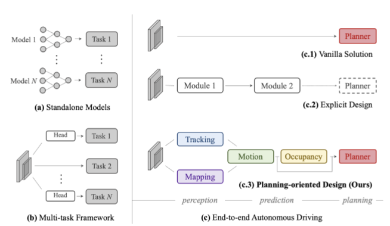
図1：自動運転フレームワークの様々な設計の比較。(a) 産業界のほとんどのソリューションは、タスクごとに別々のモデルを展開する。(b) マルチタスク学習の方式は、タスクごとに分かれたヘッドでバックボーンを共有する。(c) エンドツーエンドのパラダイムは、知覚と予測のモジュールを統合する。従来の試みは、(c.1) のように計画を直接最適化するか、(c.2) のように一部の構成要素のみでシステムを設計するかのいずれかであった。これに対し我々は (c.3) において、望ましいシステムは計画指向であるべきであり、また計画を促進するよう先行タスクを適切に組織すべきであると主張する。
図中ラベル：Standalone Models＝独立モデル、Multi-task Framework＝マルチタスクフレームワーク、Head＝ヘッド、Task＝タスク、Module＝モジュール、Planner＝プランナ、Vanilla Solution＝素朴な解法、Explicit Design＝明示的な設計、Planning-oriented Design (Ours)＝計画指向の設計（提案手法）、Tracking＝追跡、Mapping＝地図作成、Motion＝動き予測、Occupancy＝占有予測、perception＝知覚、prediction＝予測、planning＝計画、End-to-end Autonomous Driving＝エンドツーエンド自動運転
より洗練された設計は、図1(b) に示すように、共有された特徴抽出器に複数のタスク固有ヘッドを差し込むことによって、広範なタスクをマルチタスク学習（MTL）のパラダイムに組み込むことである。これは多くの領域で一般的な手法であり、一般的な視覚［79,92,108］や自動運転2［15,60,101,105］、例えば Transfuser［20］、BEVerse［105］、さらに産業化された製品、例えば Mobileye［68］、Tesla［87］、Nvidia［71］などで用いられている。MTL においては、タスク横断の共同学習戦略によって特徴抽象を活用でき、追加のタスクへ容易に拡張でき、車載チップの計算コストを節約できる。しかし、このような方式は望ましくない「負の転移（negative transfer）」を引き起こす可能性がある［23,64］。
脚注2：本論文では、自動運転における MTL を、知覚を超えたタスクを指すものとして扱う。知覚の内部での MTL、例えば検出、深度、オプティカルフローなどに関する研究は数多く存在するが、この種の文献は対象外とする。
| 設計 | アプローチ | 知覚 | 予測 | 計画 | |||
|---|---|---|---|---|---|---|---|
| 検出 | 追跡 | 地図 | 動き | 占有 | |||
| (b) | NMP［101］ | ✓ | ✓ | ✓ | |||
| NEAT［19］ | ✓ | ✓ | |||||
| BEVerse［105］ | ✓ | ✓ | ✓ | ||||
| (c.1) | ［14,16,78,97］ | ✓ | |||||
| (c.2) | PnPNet†［57］ | ✓ | ✓ | ✓ | |||
| ViP3D†［30］ | ✓ | ✓ | ✓ | ||||
| P3［82］ | ✓ | ✓ | |||||
| MP3［11］ | ✓ | ✓ | ✓ | ||||
| ST-P3［38］ | ✓ | ✓ | ✓ | ||||
| LAV［15］ | ✓ | ✓ | ✓ | ✓ | |||
| (c.3) | UniAD（提案手法） | ✓ | ✓ | ✓ | ✓ | ✓ | ✓ |
表1：タスクの比較と分類。「設計」列は図1 と同様に分類している。「検出（Det.）」は 3D 物体検出、「地図（Map）」はオンライン地図作成、「占有（Occ.）」は占有マップ予測を表す。†：これらの研究は計画のために直接提案されたものではないが、知覚と予測を同時に行うという思想を共有している。UniAD は計画を促進するために 5 つの必須の運転タスクを実行する。
これに対し、エンドツーエンド自動運転［11,15,19,38,97］の登場は、知覚、予測、計画のすべてのノードを一体として統合する。先行タスクの選択と優先順位は、計画にとって有利になるよう決定されるべきである。システムは計画指向であるべきで、特定の構成要素を含めて精巧に設計され、独立モデル方式のような誤差の蓄積や MTL 方式のような負の転移がほとんど生じないようにすべきである。表1 は、異なるフレームワーク設計のタスク分類を示している。
エンドツーエンドのパラダイムに従った「白紙状態（tabula-rasa）」の手法の 1 つは、図1(c.1) に示すように、知覚と予測の明示的な教師信号を一切用いずに、計画された軌道を直接予測するものである。先駆的な研究［14,16,21,22,78,95,97,106］は、この素朴な設計を閉ループシミュレーション［26］で検証した。この方向性はさらなる探求に値するが、特に非常に動的な都市シナリオにおいては、安全性の保証と解釈可能性の点で不十分である。本論文では、別の観点に立ち、次の問いを立てる：信頼性が高く計画指向の自動運転システムに向けて、計画に有利になるようパイプラインをどのように設計すべきか？どの先行タスクが必要か？
直観的な解決策は、図1(c.2) に示すように、周囲の物体を知覚し、将来の挙動を予測し、安全な操縦を明示的に計画することであろう。現代のアプローチ［11,30,38,57,82］は良い洞察を与え、印象的な性能を達成している。しかし我々は、問題は細部に宿ると主張する。従来の研究は、計画指向の思想を想起させる特定の構成要素の考慮に多かれ少なかれ失敗している（表1 の (c.2) ブロックを参照）。これらのモジュールの詳細な定義と用語、およびその必要性については補足資料で詳しく述べる。
この目的のため、我々は UniAD を提案する。これは、図1(c.3) および表1(c.3) に示すように、安全で頑健なシステムに向けて 5 つの必須タスクを活用する統合型自動運転（Unified Autonomous Driving）アルゴリズムフレームワークである。UniAD は計画指向の思想で設計されている。我々は、これが単なるエンジニアリング的努力によるタスクの単純な積み重ねではないと主張する。鍵となる構成要素は、すべてのノードを接続するクエリベースの設計である。古典的なバウンディングボックス表現と比較して、クエリはより大きな受容野の恩恵を受け、上流の予測からの累積誤差を和らげる。さらにクエリは、多様な相互作用、例えば複数エージェント間の関係を柔軟にモデル化・符号化できる。我々の知る限り、UniAD は自動運転の分野において、知覚・予測・計画を含むこのような多様なタスクの共同協調を包括的に調査した最初の研究である。
貢献は以下のようにまとめられる。(a) 我々は計画指向の思想に従った自動運転フレームワークの新たな展望を採り入れ、独立した設計や単純なマルチタスク学習ではなく、効果的なタスク協調の必要性を示す。(b) 我々は広範なタスクを活用する包括的なエンドツーエンドシステム UniAD を提示する。すぐに実用に移すための鍵となる構成要素は、すべてのノードを接続するインタフェースとしてのクエリ設計である。これにより UniAD は、柔軟な中間表現と、計画に向けたマルチタスクの知識交換を享受する。(c) 我々は UniAD を現実的なシナリオに対する難易度の高いベンチマーク上で実装する。広範なアブレーションを通じて、あらゆる側面で従来の最先端手法に対する本手法の優位性を検証する。
本研究が自動運転システムの目標駆動型設計に光を当て、様々な運転タスクを協調させるための出発点を提供することを期待する。
概要。図2 に示すように、UniAD は Transformer デコーダに基づく 4 つの知覚・予測モジュールと、最後に置かれた 1 つのプランナで構成される。クエリ \(Q\) は、パイプラインを接続して運転シーン内の実体間の様々な相互作用をモデル化する役割を担う。具体的には、マルチカメラ画像の系列が特徴抽出器に入力され、得られた透視ビュー特徴は BEVFormer［55］の既製の BEV エンコーダによって統一的な鳥瞰図（BEV）特徴 \(B\) に変換される。なお UniAD は特定の BEV エンコーダに限定されず、長期の時間的融合［31,74］やマルチモダリティ融合［58,64］によってより豊かな BEV 表現を抽出する他の手法を利用することもできる。TrackFormer では、トラッククエリと呼ぶ学習可能な埋め込みが \(B\) からエージェントの情報を問い合わせ、エージェントを検出・追跡する。MapFormer は、道路要素（例えば車線や区画線）の意味的抽象としてマップクエリを受け取り、地図のパノプティックセグメンテーションを行う。エージェントと地図を表現する上記のクエリを用いて、MotionFormer はエージェントと地図の間の相互作用を捉え、エージェントごとの将来軌道を予測する。各エージェントの行動はシーン内の他者に大きな影響を与えうるため、このモジュールは考慮対象のすべてのエージェントについて同時に予測を行う。同時に我々は、自車両（ego-vehicle）を明示的にモデル化し、このようなシーン中心のパラダイムにおいて自車両が他のエージェントと相互作用できるようにするための自車両クエリを考案する。OccFormer は BEV 特徴 \(B\) をクエリとして用い、エージェント単位の知識をキーおよびバリューとして備え、エージェントの同一性を保持したまま複数ステップ先の将来の占有を予測する。最後に Planner は、MotionFormer からの表現力豊かな自車両クエリを利用して計画結果を予測し、衝突を避けるために OccFormer が予測した占有領域から自らを遠ざける。
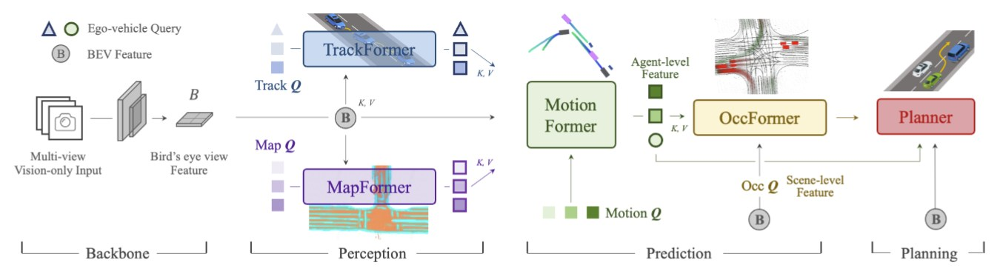
図2：統合型自動運転（UniAD）のパイプライン。計画指向の思想に従って精巧に設計されている。タスクの単純な積み重ねではなく、知覚と予測における各モジュールの効果を調査し、運転シーンにおいて先行ノードから最終的な計画までの共同最適化の利点を活用する。すべての知覚・予測モジュールは Transformer デコーダ構造で設計されており、タスククエリが各ノードを接続するインタフェースとなる。最後に置かれた単純な注意機構ベースのプランナが、先行ノードから抽出された知識を考慮して自車両の将来のウェイポイントを予測する。占有の上に重ねた地図は可視化目的のみである。
図中ラベル：Ego-vehicle Query＝自車両クエリ、BEV Feature＝BEV 特徴、Multi-view Vision-only Input＝マルチビューの視覚のみの入力、Bird's eye view Feature＝鳥瞰図特徴、Track Q＝トラッククエリ、Map Q＝マップクエリ、Motion Q＝モーションクエリ、Occ Q＝占有クエリ、Agent-level Feature＝エージェントレベル特徴、Scene-level Feature＝シーンレベル特徴、Backbone＝バックボーン、Perception＝知覚、Prediction＝予測、Planning＝計画
TrackFormer。TrackFormer は、微分不可能な後処理なしに、検出と複数物体追跡（MOT）を同時に行う。［100,104］に着想を得て、我々は同様のクエリ設計を採用する。物体検出［8,109］で用いられる従来の検出クエリに加え、フレームをまたいでエージェントを追跡するための追加のトラッククエリを導入する。具体的には、各時間ステップにおいて、初期化された検出クエリは初めて知覚された新規エージェントの検出を担当し、トラッククエリは以前のフレームで検出されたエージェントのモデル化を続ける。検出クエリとトラッククエリはいずれも、BEV 特徴 \(B\) に注意を向けることでエージェントの抽象を捉える。シーンが連続的に変化するにつれて、現在フレームのトラッククエリは自己注意モジュールにおいて以前に記録されたクエリと相互作用して時間的情報を集約し、これは対応するエージェントが完全に消える（一定時間追跡されない）まで続く。［8］と同様に、TrackFormer は \(N\) 層を含み、最終出力状態 \(Q_A\) は下流の予測タスクのために \(N_a\) 個の有効なエージェントの知識を提供する。周囲の他のエージェントを符号化するクエリに加えて、我々はクエリ集合に特別な 1 つの自車両クエリを導入し、自動運転車自身を明示的にモデル化する。これはさらに計画で用いられる。
MapFormer。我々はこれを 2D パノプティックセグメンテーション手法 Panoptic SegFormer［56］に基づいて設計する。下流の動き予測を助けるため、位置と構造の知識を符号化したマップクエリとして道路要素を疎に表現する。運転シナリオに対しては、車線、区画線、横断歩道を thing（物体）とし、走行可能領域を stuff（領域）とする［50］。MapFormer も \(N\) 層を積み重ねており、各層の出力結果はすべて教師付けされるが、エージェントと地図の相互作用のために MotionFormer へ渡されるのは最終層で更新されたクエリ \(Q_M\) のみである。
近年の研究により、動き予測タスクにおける Transformer 構造の有効性が実証されている［43,44,63,69,70,84,99］。これに着想を得て、我々はエンドツーエンドの設定における MotionFormer を提案する。TrackFormer と MapFormer からそれぞれ得られる、動的エージェント \(Q_A\) と静的地図 \(Q_M\) の高度に抽象化されたクエリを用いて、MotionFormer はすべてのエージェントのマルチモーダルな将来の動き、すなわち上位 k 個の可能な軌道を、シーン中心の方式で予測する。このパラダイムは 1 回の順伝播でフレーム内の複数エージェントの軌道を生成するため、シーン全体を各エージェントの座標系に合わせる計算コストを大幅に節約する［49］。同時に、TrackFormer からの自車両クエリを MotionFormer に通し、将来のダイナミクスを考慮して自車両を他のエージェントと相互作用させる。形式的には、出力される動きは \(\{\hat{\mathbf{x}}_{i,k} \in \mathbb{R}^{T\times 2} | i = 1,\ldots,N_a; k = 1,\ldots,\mathcal{K}\}\) と定式化される。ここで \(i\) はエージェントのインデックス、\(k\) は軌道のモダリティのインデックス、\(T\) は予測ホライズンの長さである。
MotionFormer。MotionFormer は \(N\) 層で構成され、各層は 3 種類の相互作用、すなわちエージェント–エージェント、エージェント–地図、エージェント–ゴール点の相互作用を捉える。各モーションクエリ \(Q_{i,k}\)（後で定義する。以下では簡単のため添え字 \(i, k\) を省略する）について、他のエージェント \(Q_A\) または地図要素 \(Q_M\) との相互作用は次のように定式化できる：
\[ Q_{a/m} = \texttt{MHCA}(\texttt{MHSA}(Q), Q_A/Q_M), \tag{1} \]
ここで \(\texttt{MHCA}\)、\(\texttt{MHSA}\) はそれぞれマルチヘッド交差注意とマルチヘッド自己注意［91］を表す。予測軌道を洗練するには意図された位置、すなわちゴール点に注目することも重要であるため、変形可能注意（deformable attention）［109］を用いたエージェント–ゴール点注意を次のように考案する：
\[ Q_g = \texttt{DeformAttn}(Q, \hat{\mathbf{x}}_T^{l-1}, B), \tag{2} \]
ここで \(\hat{\mathbf{x}}_T^{l-1}\) は前の層の予測軌道の終点である。変形可能注意モジュール \(\texttt{DeformAttn}(q,r,x)\) は、クエリ \(q\)、参照点 \(r\)、空間特徴 \(x\) を入力として受け取る。これは参照点の周囲の空間特徴に対して疎な注意を行う。これにより、予測軌道は終点の周囲を考慮してさらに洗練される。3 つの相互作用はすべて並列にモデル化され、生成された \(Q_a\)、\(Q_m\)、\(Q_g\) は連結されて多層パーセプトロン（MLP）に渡され、クエリコンテキスト \(Q_{\text{ctx}}\) が得られる。その後、\(Q_{\text{ctx}}\) は洗練のために後続の層に送られるか、最終層で予測結果として復号される。
モーションクエリ。MotionFormer の各層への入力クエリはモーションクエリと呼ばれ、2 つの成分からなる。前述のとおり先行層で生成されたクエリコンテキスト \(Q_{\text{ctx}}\) と、クエリ位置 \(Q_{\text{pos}}\) である。具体的には、\(Q_{\text{pos}}\) は式 (3) のように 4 種類の位置的知識を統合する：(1) シーンレベルのアンカー \(I^s\) の位置、(2) エージェントレベルのアンカー \(I^a\) の位置、(3) エージェント \(i\) の現在位置、(4) 予測されたゴール点。
\[ \begin{aligned} Q_{\text{pos}} &= \text{MLP}(\text{PE}(I^s)) + \text{MLP}(\text{PE}(I^a)) \\ &\quad + \text{MLP}(\text{PE}(\hat{\mathbf{x}}_0)) + \text{MLP}(\text{PE}(\hat{\mathbf{x}}_T^{l-1})). \end{aligned} \tag{3} \]
ここでは位置点を符号化するために、正弦波位置符号化 \(\text{PE}(\cdot)\) とそれに続く MLP を用いる。また最初の層では \(\hat{\mathbf{x}}_T^0\) を \(I^s\) とする（添え字 \(i, k\) もここでは省略している）。シーンレベルのアンカーは大域的な視点での事前の移動統計を表し、エージェントレベルのアンカーは局所座標系における可能な意図を捉える。いずれも予測の不確実性を狭めるため、正解軌道の終点に対して k-means アルゴリズムでクラスタリングされる。事前知識とは対照的に、始点は各エージェントに合わせた位置埋め込みを提供し、予測された終点は粗から細へ（coarse-to-fine）の方式で層ごとに最適化される動的アンカーとして機能する。
非線形最適化。正解の知覚結果、すなわちエージェントの位置と対応する追跡に直接アクセスできる従来の動き予測研究とは異なり、我々のエンドツーエンドのパラダイムでは前段モジュールに由来する予測の不確実性を考慮する。不完全な検出位置や方位角から正解ウェイポイントを強引に回帰すると、大きな曲率や加速度を伴う非現実的な軌道予測につながりうる。これに対処するため、非線形スムーザ［7］を採用して目標軌道を調整し、上流モジュールによって予測された不正確な始点のもとでも物理的に実現可能なものにする。この処理は次のとおりである：
\[ \tilde{\mathbf{x}}^* = \arg\min_{\mathbf{x}} c(\mathbf{x}, \tilde{\mathbf{x}}), \tag{4} \]
ここで \(\tilde{\mathbf{x}}\) と \(\tilde{\mathbf{x}}^*\) は正解軌道と平滑化された軌道を表し、\(\mathbf{x}\) は多重シューティング法（multiple-shooting）［3］によって生成される。コスト関数は次のとおりである：
\[ c(\mathbf{x}, \tilde{\mathbf{x}}) = \lambda_{\text{xy}} \|\mathbf{x}, \tilde{\mathbf{x}}\|_2 + \lambda_{\text{goal}} \|\mathbf{x}_T, \tilde{\mathbf{x}}_T\|_2 + \sum_{\phi\in\Phi} \phi(\mathbf{x}), \tag{5} \]
ここで \(\lambda_{\text{xy}}\) と \(\lambda_{\text{goal}}\) はハイパーパラメータであり、運動学的関数の集合 \(\Phi\) は躍度（jerk）、曲率、曲率変化率、加速度、横加速度の 5 項からなる。このコスト関数は、目標軌道が運動学的制約に従うよう正則化する。この目標軌道の最適化は学習時にのみ行われ、推論には影響しない。
占有グリッドマップは離散化された BEV 表現であり、各セルはそれが占有されているかどうかを示す信念を保持する。占有予測タスクは、グリッドマップが将来どのように変化するかを見出すことである。従来のアプローチは、観測された BEV 特徴から将来予測を時間方向に展開するために RNN 構造を利用している［35,38,105］。しかしそれらは、BEV 特徴全体を RNN の隠れ状態に圧縮するため大部分がエージェント非依存であり、エージェントごとの占有マップを生成するために高度に手作業で設計されたクラスタリング後処理に依存している。エージェント単位の知識の利用が不十分であるため、シーンがどのように変化するかを理解するのに不可欠な、すべてのエージェントの挙動を大域的に予測することが難しい。これに対処するため、我々は OccFormer を提示し、シーンレベルとエージェントレベルの意味情報を 2 つの側面で取り込む：(1) 将来のホライズンへ展開する際に、密なシーン特徴が精巧に設計された注意モジュールを介してエージェントレベルの特徴を獲得する。(2) 重い後処理なしに、エージェントレベル特徴と密なシーン特徴との行列積によってインスタンスごとの占有を容易に生成する。
OccFormer は \(T_o\) 個の逐次的なブロックで構成され、\(T_o\) は予測ホライズンを示す。密に表現される占有の計算コストが高いため、\(T_o\) は通常、動き予測タスクにおける \(T\) よりも小さいことに注意されたい。各ブロックは、豊富なエージェント特徴 \(G^t\) と前の層からの状態（密な特徴）\(F^{t-1}\) を入力として受け取り、インスタンスレベルとシーンレベルの両方の情報を考慮して時間ステップ \(t\) の \(F^t\) を生成する。ダイナミクスと空間的事前情報を持つエージェント特徴 \(G^t\) を得るため、MotionFormer からのモーションクエリをモダリティ次元で max-pooling し、これを \(Q_X \in \mathbb{R}^{N_a\times D}\) と表す。ここで \(D\) は特徴次元である。次に、時刻固有の MLP を介して、これを上流のトラッククエリ \(Q_A\) および現在位置の埋め込み \(P_A\) と融合する：
\[ G^t = \text{MLP}_t([Q_A, P_A, Q_X]),\ t = 1,\ldots,T_o, \tag{6} \]
ここで \([\cdot]\) は連結を示す。シーンレベルの知識については、学習効率のために BEV 特徴 \(B\) を 1/4 の解像度に縮小し、最初のブロックの入力 \(F^0\) とする。さらに学習時のメモリを節約するため、各ブロックはダウンサンプル–アップサンプルの方式に従い、その間に注意モジュールを挟んで、1/8 に縮小された特徴（\(F_{\text{ds}}^t\) と表す）上でピクセル–エージェント相互作用を行う。
ピクセル–エージェント相互作用は、将来の占有を予測する際にシーンレベルとエージェントレベルの理解を統合するよう設計されている。密な特徴 \(F_{\text{ds}}^t\) をクエリとし、インスタンスレベルの特徴をキーおよびバリューとして、密な特徴を時間とともに更新する。詳しくは、\(F_{\text{ds}}^t\) は自己注意層を通過して離れたグリッド間の応答をモデル化し、その後、交差注意層がエージェント特徴 \(G^t\) とグリッドごとの特徴との相互作用をモデル化する。さらに、ピクセルとエージェントの対応を揃えるため、［17］に着想を得て、注意マスクによって交差注意を制約する。これにより、各ピクセルは時間ステップ \(t\) においてそのピクセルを占有しているエージェントのみを見るよう制限される。密な特徴の更新過程は次のように定式化される：
\[ D_{\text{ds}}^t = \texttt{MHCA}(\texttt{MHSA}(F_{\text{ds}}^t), G^t, \text{attn\_mask} = O_m^t). \tag{7} \]
注意マスク \(O_m^t\) は意味的に占有と類似しており、追加のエージェントレベル特徴と密な特徴 \(F_{\text{ds}}^t\) を乗算することで生成される。ここでこのエージェントレベル特徴をマスク特徴 \(M^t = \text{MLP}(G^t)\) と呼ぶ。式 (7) の相互作用過程の後、\(D_{\text{ds}}^t\) は \(B\) の 1/4 のサイズにアップサンプルされる。さらに残差接続として \(D_{\text{ds}}^t\) にブロック入力 \(F^{t-1}\) を加え、得られた特徴 \(F^t\) を次のブロックに渡す。
インスタンスレベルの占有。これは各エージェントの同一性を保持した占有を表す。最近のクエリベースのセグメンテーション研究［18,52］と同様に、行列積によって簡単に求めることができる。形式的には、BEV 特徴 \(B\) の元のサイズ \(H\times W\) の占有予測を得るために、シーンレベル特徴 \(F^t\) を畳み込みデコーダによって \(F_{\text{dec}}^t \in \mathbb{R}^{C\times H\times W}\) にアップサンプルする。ここで \(C\) はチャネル次元である。エージェントレベル特徴については、別の MLP によって粗いマスク特徴 \(M^t\) をさらに占有特徴 \(U^t \in \mathbb{R}^{N_a\times C}\) に更新する。元のエージェント特徴 \(G^t\) ではなくマスク特徴 \(M^t\) から \(U^t\) を生成するほうが優れた性能につながることを経験的に見出した。時間ステップ \(t\) の最終的なインスタンスレベル占有は次のとおりである：
\[ \hat{O}_A^t = U^t \cdot F_{\text{dec}}^t. \tag{8} \]
高精度（HD）地図や事前に定義された経路を用いない計画では、通常、進む方向を示す高レベルのコマンドが必要となる［11,38］。これに従い、生のナビゲーション信号（すなわち左折、右折、直進）を、コマンド埋め込みと呼ぶ 3 つの学習可能な埋め込みに変換する。MotionFormer からの自車両クエリはすでにそのマルチモーダルな意図を表現しているため、これにコマンド埋め込みを付与して「計画クエリ（plan query）」を構成する。計画クエリを BEV 特徴 \(B\) に注意させて周囲を認識させ、その後、将来のウェイポイント \(\hat{\tau}\) に復号する。
衝突をさらに回避するため、推論時にのみ、ニュートン法に基づいて次のように \(\hat{\tau}\) を最適化する：
\[ \tau^* = \arg\min_{\tau} f(\tau, \hat{\tau}, \hat{O}), \tag{9} \]
ここで \(\hat{\tau}\) は元の計画予測であり、\(\tau^*\) は最適化された計画を表す。これは多重シューティング法［3］による軌道 \(\tau\) の中から、コスト関数 \(f(\cdot)\) を最小化するよう選択される。\(\hat{O}\) は OccFormer によるインスタンスごとの占有予測を統合した古典的な二値占有マップである。コスト関数 \(f(\cdot)\) は次のように計算される：
\[ f(\tau, \hat{\tau}, \hat{O}) = \lambda_{\text{coord}} \|\tau, \hat{\tau}\|_2 + \lambda_{\text{obs}} \sum_t \mathcal{D}(\tau_t, \hat{O}^t), \tag{10} \]
\[ \mathcal{D}(\tau_t, \hat{O}^t) = \sum_{(x,y)\in\mathcal{S}} \frac{1}{\sigma\sqrt{2\pi}} \exp\left(-\frac{\|\tau_t - (x,y)\|_2^2}{2\sigma^2}\right). \tag{11} \]
ここで \(\lambda_{\text{coord}}\)、\(\lambda_{\text{obs}}\)、\(\sigma\) はハイパーパラメータであり、\(t\) は将来のホライズンの時間ステップのインデックスである。\(l_2\) コストは軌道を元の予測軌道へ引き寄せ、衝突項 \(\mathcal{D}\) は、\(\mathcal{S} = \{(x,y) \,|\, \|(x,y) - \tau_t\|_2 \lt d, \hat{O}_{x,y}^t = 1\}\) に限定された周囲の位置を考慮して、軌道を占有されたグリッドから遠ざける。
UniAD は 2 段階で学習される。まず知覚部分、すなわち追跡モジュールと地図作成モジュールを数エポック（我々の実験では 6 エポック）共同で学習し、その後、知覚・予測・計画のすべてのモジュールを用いてモデルを 20 エポック、エンドツーエンドで学習する。2 段階学習のほうが経験的に安定であることがわかった。各損失の詳細については補足資料を参照されたい。
共有マッチング。UniAD はインスタンス単位のモデル化を含むため、知覚と予測のタスクでは予測を正解集合と対応付ける必要がある。DETR［8,56］と同様に、追跡とオンライン地図作成の段階では二部マッチングアルゴリズムを採用する。追跡に関しては、検出クエリからの候補は新たに出現した正解物体と対応付けられ、トラッククエリからの予測は以前のフレームからの割り当てを引き継ぐ。追跡モジュールにおけるマッチング結果は動き予測ノードと占有ノードで再利用され、エンドツーエンドのフレームワークにおいて、過去の追跡から将来の動きまでエージェントを一貫してモデル化する。
| ID | モジュール | 追跡 | 地図作成 | 動き予測 | 占有予測 | 計画 | |||||||||||||
|---|---|---|---|---|---|---|---|---|---|---|---|---|---|---|---|---|---|---|---|
| Track | Map | Motion | Occ. | Plan | AMOTA↑ | AMOTP↓ | IDS↓ | IoU-lane↑ | IoU-road↑ | minADE↓ | minFDE↓ | MR↓ | IoU-n.↑ | IoU-f.↑ | VPQ-n.↑ | VPQ-f.↑ | avg.L2↓ | avg.Col.↓ | |
| 0* | ✓ | ✓ | ✓ | ✓ | ✓ | 0.356 | 1.328 | 893 | 0.302 | 0.675 | 0.858 | 1.270 | 0.186 | 55.9 | 34.6 | 47.8 | 26.4 | 1.154 | 0.941 |
| 1 | ✓ | 0.348 | 1.333 | 791 | - | - | - | - | - | - | - | - | - | - | - | ||||
| 2 | ✓ | - | - | - | 0.305 | 0.674 | - | - | - | - | - | - | - | - | - | ||||
| 3 | ✓ | ✓ | 0.355 | 1.336 | 785 | 0.301 | 0.671 | - | - | - | - | - | - | - | - | - | |||
| 4 | ✓ | - | - | - | - | - | 0.815 | 1.224 | 0.182 | - | - | - | - | - | - | ||||
| 5 | ✓ | ✓ | 0.360 | 1.350 | 919 | - | - | 0.751 | 1.109 | 0.162 | - | - | - | - | - | - | |||
| 6 | ✓ | ✓ | ✓ | 0.354 | 1.339 | 820 | 0.303 | 0.672 | 0.736(-9.7%) | 1.066(-12.9%) | 0.158 | - | - | - | - | - | - | ||
| 7 | ✓ | - | - | - | - | - | - | - | - | 60.5 | 37.0 | 52.4 | 29.8 | - | - | ||||
| 8 | ✓ | ✓ | 0.360 | 1.322 | 809 | - | - | - | - | - | 62.1 | 38.4 | 52.2 | 32.1 | - | - | |||
| 9 | ✓ | ✓ | ✓ | ✓ | 0.359 | 1.359 | 1057 | 0.304 | 0.675 | 0.710(-3.5%) | 1.005(-5.8%) | 0.146 | 62.3 | 39.4 | 53.1 | 32.2 | - | - | |
| 10 | ✓ | - | - | - | - | - | - | - | - | - | - | - | - | 1.131 | 0.773 | ||||
| 11 | ✓ | ✓ | ✓ | ✓ | 0.366 | 1.337 | 889 | 0.303 | 0.672 | 0.741 | 1.077 | 0.157 | - | - | - | - | 1.014 | 0.717 | |
| 12 | ✓ | ✓ | ✓ | ✓ | ✓ | 0.358 | 1.334 | 641 | 0.302 | 0.672 | 0.728 | 1.054 | 0.154 | 62.3 | 39.5 | 52.8 | 32.3 | 1.004 | 0.430 |
表2：各タスクの有効性に関する詳細なアブレーション。2 つの知覚サブタスクが動き予測を大きく助けること、また 2 つの予測モジュールを統合することで予測性能も恩恵を受けることが結論づけられる。すべての事前表現を用いることで、我々の目標である計画は安全性を確保するよう大幅に向上する。UniAD は予測タスクと計画タスクにおいて素朴な MTL の解法を大差で上回り、さらに知覚性能の実質的な低下がまったく生じないという優位性も持つ。簡潔さのため主要な評価指標のみを示す。「avg.L2」と「avg.Col」は計画ホライズン全体での平均値である。∗：ID-0 は各タスクに別々のヘッドを持つ MTL 方式である。
（訳注：原表では各タスクの主評価指標の領域が灰色背景で示されている。最良値は太字、次点は下線。）
我々は難易度の高い nuScenes データセット［6］で実験を行う。本節では、設計の有効性を 3 つの側面から検証する：タスク協調の利点とその計画への効果を明らかにする統合的な結果、各タスクを従来手法と比較したモジュールごとの結果、そして特定のモジュールの設計空間に関するアブレーションである。紙面の制約により、評価プロトコルの全体、一部のアブレーションおよび可視化は補足資料で示す。
エンドツーエンドのパイプラインにおける先行タスクの有効性と必要性を証明するため、表2 に示すように広範なアブレーションを行う。この表の各行は、2 列目のモジュール列に列挙されたタスクモジュールを組み込んだ場合のモデル性能を示す。最初の行（ID-0）は、比較のための、タスクごとに別々のヘッドを持つ素朴なマルチタスクのベースラインである。各列において、各評価指標の最良の結果は太字で、次点の結果は下線で示している。
安全な計画へのロードマップ。予測は知覚に比べて計画により近いため、まず我々のフレームワークにおける 2 種類の予測タスク、すなわち動き予測と占有予測を調査する。実験 10〜12 では、2 つのタスクを同時に導入した場合（実験 12）にのみ、中間タスクを一切持たない素朴なエンドツーエンド計画（実験 10、図1(c.1)）と比較して、計画の L2 と衝突率の両指標が最良の結果を達成する。したがって、安全な計画という目的のためには、これら 2 つの予測タスクの両方が必要であると結論づける。一歩戻って、実験 7〜9 では 2 種類の予測の協調効果を示す。両タスクを緊密に統合すると両方の性能が向上する（実験 9、minADE -3.5%、minFDE -5.8%、MR(%) -1.3、IoU-f.(%) +2.4、VPQ-f.(%) +2.4）。これはエージェント表現とシーン表現の両方を含めることの必要性を示している。一方、優れた動き予測性能を実現するために、実験 4〜6 では知覚モジュールがどのように貢献しうるかを探る。特に、追跡ノードと地図作成ノードの両方を組み込むことで、予測結果に顕著な改善がもたらされる（minADE -9.7%、minFDE -12.9%、MR(%) -2.3）。また実験 1〜3 も示しており、知覚サブタスクを一緒に学習しても単一タスクと同等の結果が得られることを示している。さらに、素朴なマルチタスク学習（実験 0、図1(b)）と比較して、実験 12 はすべての必須指標で大差をつけてこれを上回っており（minADE -15.2%、minFDE -17.0%、MR(%) -3.2、IoU-f.(%) +4.9、VPQ-f.(%) +5.9、avg.L2 -0.15m、avg.Col.(%) -0.51）、我々の計画指向の設計の優位性を示している。
知覚–予測–計画という逐次的な順序に従い、nuScenes の検証セットにおける各タスクモジュールの性能を従来の最先端手法と比較して報告する。UniAD はこれらすべてのタスクを、学習済みの単一のネットワークで同時に実行していることに注意されたい。各タスクの主要な評価指標は、表中で灰色の背景で示している。
知覚の結果。表3 の複数物体追跡については、UniAD は MUTR3D［104］および ViP3D［30］と比較して、それぞれ AMOTA(%) で +6.5 および +14.2 の大幅な改善をもたらす。さらに UniAD は最も低い ID スイッチのスコアを達成しており、各トラックレットの時間的一貫性を示している。表4 のオンライン地図作成については、UniAD は車線のセグメンテーションで良好な性能を示す（BEVFormer と比較して IoU(%) で +7.4）。これは動き予測モジュールにおける下流のエージェント–道路相互作用にとって極めて重要である。我々の追跡モジュールはエンドツーエンドのパラダイムに従っているため、Immortal Tracker［93］のような複雑な関連付けを伴う検出ベース追跡（tracking-by-detection）手法には依然として劣り、また我々の地図作成結果は特定のクラスにおいて従来の知覚指向の手法に後れを取る。我々は、UniAD はモデルの全能力で知覚を最適化するのではなく、知覚した情報によって最終的な計画に役立つことを目的としていると主張する。
| 手法 | AMOTA↑ | AMOTP↓ | Recall↑ | IDS↓ |
|---|---|---|---|---|
| Immortal Tracker†［93］ | 0.378 | 1.119 | 0.478 | 936 |
| ViP3D［30］ | 0.217 | 1.625 | 0.363 | - |
| QD3DT［36］ | 0.242 | 1.518 | 0.399 | - |
| MUTR3D［104］ | 0.294 | 1.498 | 0.427 | 3822 |
| UniAD | 0.359 | 1.320 | 0.467 | 906 |
表3：複数物体追跡。UniAD は、従来のエンドツーエンド MOT 手法（画像入力のみ）をすべての指標で上回る。†：事後の関連付けを伴う検出ベース追跡手法であり、公平な比較のため BEVFormer を用いて再実装した。
| 手法 | Lanes↑ | Drivable↑ | Divider↑ | Crossing↑ |
|---|---|---|---|---|
| VPN［72］ | 18.0 | 76.0 | - | - |
| LSS［76］ | 18.3 | 73.9 | - | - |
| BEVFormer［55］ | 23.9 | 77.5 | - | - |
| BEVerse†［105］ | - | - | 30.6 | 17.2 |
| UniAD | 31.3 | 69.1 | 25.7 | 13.8 |
表4：オンライン地図作成。UniAD は、包括的な道路の意味情報を扱いつつ、最先端の知覚指向手法に対して競争力のある性能を達成する。セグメンテーションの IoU（%）を報告する。†：BEVFormer を用いて再実装。
列名：Lanes＝車線、Drivable＝走行可能領域、Divider＝区画線、Crossing＝横断歩道
| 手法 | minADE(m)↓ | minFDE(m)↓ | MR↓ | EPA↑ |
|---|---|---|---|---|
| PnPNet†［57］ | 1.15 | 1.95 | 0.226 | 0.222 |
| ViP3D［30］ | 2.05 | 2.84 | 0.246 | 0.226 |
| Constant Pos. | 5.80 | 10.27 | 0.347 | - |
| Constant Vel. | 2.13 | 4.01 | 0.318 | - |
| UniAD | 0.71 | 1.02 | 0.151 | 0.456 |
表5：動き予測。UniAD は、従来の視覚ベースのエンドツーエンド手法を大きく上回る。比較として、車両を一定位置（Constant Pos.）または一定速度（Constant Vel.）でモデル化する 2 つの設定も報告する。†：BEVFormer を用いて再実装。
| 手法 | IoU-n.↑ | IoU-f.↑ | VPQ-n.↑ | VPQ-f.↑ |
|---|---|---|---|---|
| FIERY［35］ | 59.4 | 36.7 | 50.2 | 29.9 |
| StretchBEV［1］ | 55.5 | 37.1 | 46.0 | 29.0 |
| ST-P3［38］ | - | 38.9 | - | 32.1 |
| BEVerse†［105］ | 61.4 | 40.9 | 54.3 | 36.1 |
| UniAD | 63.4 | 40.2 | 54.7 | 33.5 |
表6：占有予測。UniAD は、計画にとってより重要な近傍領域で大幅な改善を得る。「n.」と「f.」はそれぞれ近距離（\(30\times 30m\)）と遠距離（\(50\times 50m\)）の評価範囲を示す。†：強いデータ拡張を用いて学習。
| 手法 | L2(m)↓ | 衝突率（Col. Rate）(%)↓ | ||||||
|---|---|---|---|---|---|---|---|---|
| 1s | 2s | 3s | 平均 | 1s | 2s | 3s | 平均 | |
| NMP†［101］ | - | - | 2.31 | - | - | - | 1.92 | - |
| SA-NMP†［101］ | - | - | 2.05 | - | - | - | 1.59 | - |
| FF†［37］ | 0.55 | 1.20 | 2.54 | 1.43 | 0.06 | 0.17 | 1.07 | 0.43 |
| EO†［47］ | 0.67 | 1.36 | 2.78 | 1.60 | 0.04 | 0.09 | 0.88 | 0.33 |
| ST-P3［38］ | 1.33 | 2.11 | 2.90 | 2.11 | 0.23 | 0.62 | 1.27 | 0.71 |
| UniAD | 0.48 | 0.96 | 1.65 | 1.03 | 0.05 | 0.17 | 0.71 | 0.31 |
表7：計画。UniAD はすべての時間区間で最も低い L2 誤差と衝突率を達成し、多くの場合で LiDAR ベースの手法（†）をも上回っており、我々のシステムの安全性を裏付けている。
（訳注：原表では UniAD が太字で示されているが、1s・2s の衝突率では EO の 0.04・0.09 のほうが UniAD の 0.05・0.17 より低く、FF の 2s 衝突率 0.17 とも同値である。本文の「すべての時間区間で最も低い衝突率」という記述はこの点で表と整合しない。）
| ID | Scene-l. Anch. | Goal Inter. | Ego \(Q\) | NLO. | minADE↓ | minFDE↓ | MR↓ | minFDE-mAP*↑ |
|---|---|---|---|---|---|---|---|---|
| 1 | 0.844 | 1.336 | 0.177 | 0.246 | ||||
| 2 | ✓ | 0.768 | 1.159 | 0.164 | 0.267 | |||
| 3 | ✓ | ✓ | 0.755 | 1.130 | 0.168 | 0.264 | ||
| 4 | ✓ | ✓ | ✓ | 0.747 | 1.096 | 0.156 | 0.266 | |
| 5 | ✓ | ✓ | ✓ | ✓ | 0.710 | 1.004 | 0.146 | 0.273 |
表8：動き予測モジュールの設計に関するアブレーション。すべての構成要素が最終的な性能に貢献している。「Scene-l. Anch.」は回転させたシーンレベルのアンカーを表す。「Goal Inter.」はエージェント–ゴール点相互作用を意味する。「Ego \(Q\)」は自車両クエリを表し、「NLO.」は非線形最適化の戦略である。∗：検出と予測の精度を同時に考慮する評価指標であり、詳細は補足資料に記す。
予測の結果。動き予測の結果を表5 に示す。UniAD は従来の視覚ベースのエンドツーエンド手法を大きく上回る。PnPNet-vision［57］および ViP3D［30］と比較して、minADE の予測誤差をそれぞれ 38.3% および 65.4% 削減する。表6 に報告する占有予測については、UniAD は近傍領域で顕著な進歩を遂げ、強いデータ拡張を用いた FIERY［35］および BEVerse［105］と比較して、IoU-near(%) でそれぞれ +4.0 および +2.0 を達成する。
計画の結果。自車両クエリと占有の両方に含まれる豊富な時空間情報の恩恵により、UniAD は計画ホライズンの平均値で見て、ST-P3［38］と比較して計画の L2 誤差と衝突率をそれぞれ 51.2% および 56.3% 削減する。さらに、知覚タスクにおいてしばしば困難とみなされる、いくつかの LiDAR ベースの手法をも顕著に上回る。
図3 は、ある複雑なシーンにおけるすべてのタスクの結果を可視化したものである。自車両は、前方車両と車線の潜在的な動きに注意を払いながら走行している。補足資料では、困難なシナリオのさらなる可視化と、計画指向の設計にとって有望な事例を示す。それは、前段のモジュールで不正確な結果が生じても後段のタスクが依然として回復できる事例であり、例えば物体の方位角に大きなずれがあったり追跡結果で検出に失敗したりしても、計画軌道は妥当なままである。加えて、UniAD の失敗事例は主に大型トラックやトレーラーのようなロングテールのシナリオで生じることを分析しており、これも補足資料に示す。
MotionFormer における設計の効果。表8 は、2.2 節で述べた提案構成要素のすべてが、minADE、minFDE、ミス率（Miss Rate）、minFDE-mAP の各指標に関して最終的な性能に貢献していることを示している。特に、回転させたシーンレベルのアンカーは大幅な性能向上（minADE -15.8%、minFDE -11.2%、minFDE-mAP(%) +1.9）を示しており、シーン中心の方式で動き予測を行うことが不可欠であることを示している。エージェント–ゴール点相互作用は計画指向の視覚特徴によってモーションクエリを強化し、周囲のエージェントは自車両の意図を考慮することでさらに恩恵を受けることができる。さらに、非線形最適化の戦略は、エンドツーエンドのシナリオにおける知覚の不確実性を考慮することで性能を向上させる（minADE -5.0%、minFDE -8.4%、MR(%) -1.0、minFDE-mAP(%) +0.7）。
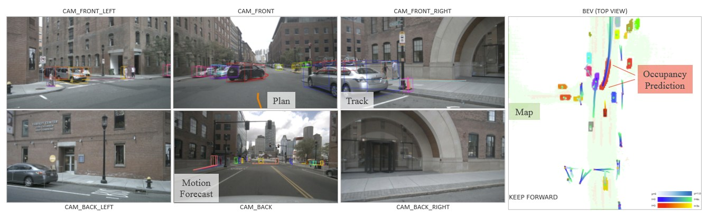
図3：可視化結果。サラウンドビュー画像と BEV において、すべてのタスクの結果を示す。動き予測モジュールと占有予測モジュールの予測は一貫しており、この事例では自車両は前方の黒い車に道を譲っている。各エージェントは固有の色で示されている。動き予測からは、画像ビューでは上位 1 本、BEV では上位 3 本の軌道のみを可視化のために選択している。
図中ラベル：CAM_FRONT_LEFT／CAM_FRONT／CAM_FRONT_RIGHT／CAM_BACK_LEFT／CAM_BACK／CAM_BACK_RIGHT＝前方左／前方／前方右／後方左／後方／後方右カメラ、BEV (TOP VIEW)＝BEV（上面図）、Plan＝計画、Track＝追跡、Motion Forecast＝動き予測、Map＝地図、Occupancy Prediction＝占有予測、KEEP FORWARD＝直進（コマンド）
| ID | Cross. Attn. | Attn. Mask | Mask Feat. | IoU-n.↑ | IoU-f.↑ | VPQ-n.↑ | VPQ-f.↑ |
|---|---|---|---|---|---|---|---|
| 1 | 61.2 | 39.7 | 51.5 | 31.8 | |||
| 2 | ✓ | 61.3 | 39.4 | 51.0 | 31.8 | ||
| 3 | ✓ | ✓ | 62.3 | 39.7 | 52.4 | 32.5 | |
| 4 | ✓ | ✓ | ✓ | 62.6 | 39.5 | 53.2 | 32.8 |
表9：占有予測モジュールの設計に関するアブレーション。マスク付きの交差注意とマスク特徴の再利用は予測の改善に役立つ。「Cross. Attn.」と「Attn. Mask」は、それぞれピクセル–エージェント相互作用における交差注意と注意マスクを表す。「Mask Feat.」はインスタンスレベル占有のためのマスク特徴の再利用を示す。
| ID | BEV Att. | Col. Loss | Occ. Optim. | L2↓ | 衝突率（Col. Rate）↓ | ||||
|---|---|---|---|---|---|---|---|---|---|
| 1s | 2s | 3s | 1s | 2s | 3s | ||||
| 1 | 0.44 | 0.99 | 1.71 | 0.56 | 0.88 | 1.64 | |||
| 2 | ✓ | 0.44 | 1.04 | 1.81 | 0.35 | 0.71 | 1.58 | ||
| 3 | ✓ | ✓ | 0.44 | 1.02 | 1.76 | 0.30 | 0.51 | 1.39 | |
| 4 | ✓ | ✓ | ✓ | 0.54 | 1.09 | 1.81 | 0.13 | 0.42 | 1.05 |
表10：計画モジュールの設計に関するアブレーション。結果は各先行タスクの必要性を示している。「BEV Att.」は BEV 特徴への注意を示す。「Col. Loss」は衝突損失を表す。「Occ. Optim.」は占有を用いた最適化戦略である。
OccFormer における設計の効果。表9 に示すように、局所性の制約なしに各ピクセルをすべてのエージェントに注意させると（実験 2）、注意を用いないベースライン（実験 1）と比較して性能がわずかに悪化する。占有に導かれた注意マスクはこの問題を解決し、特に近傍領域で改善をもたらす（実験 3、IoU-n.(%) +1.0、VPQ-n.(%) +1.4）。さらに、占有特徴を得るためにエージェント特徴ではなくマスク特徴 \(M^t\) を再利用することで、性能はさらに向上する。
Planner における設計の効果。表10 では、プランナにおける提案設計、すなわち BEV 特徴への注意、衝突損失を用いた学習、占有を用いた最適化戦略についてのアブレーションを示す。先行研究［37,38］と同様に、安全性のためには素朴な軌道模倣（L2 指標）よりも低い衝突率が望ましく、UniAD ではすべての構成要素を適用することで衝突率が低減される。
我々は自動運転アルゴリズムフレームワークのシステムレベルの設計について議論した。計画という究極の目標に向けた計画指向のパイプライン、すなわち UniAD を提案した。知覚と予測における各モジュールの必要性について詳細な分析を示した。タスクを統合するため、UniAD のすべてのノードを接続するクエリベースの設計を提案し、環境内のエージェント相互作用のためのより豊かな表現の恩恵を得た。広範な実験により、提案手法をあらゆる側面で検証した。
限界と今後の課題。複数のタスクを持つこのような包括的なシステムを協調させることは自明ではなく、特に時間的な履歴を用いて学習する場合には膨大な計算能力を必要とする。軽量な展開に向けてシステムをいかに設計・整理するかは、今後探求する価値がある。さらに、深度推定や行動予測といったより多くのタスクを組み込むべきか否か、そしてそれらをどのようにシステムに埋め込むかも、価値ある今後の方向性である。
謝辞。本研究は、中国国家重点研究開発計画（National Key R&D Program of China, 2022ZD0160100）、ならびに一部は上海市科学技術委員会（Shanghai Committee of Science and Technology, 21DZ1100100）および NSFC（62206172）の支援を受けた。
参考文献は原文のまま掲載した（各項目末尾の被引用ページへの逆参照番号は省略した）。
（訳注：括弧内は原文 PDF のページ番号。）
検出と追跡。検出と追跡は自動運転にとって極めて重要な 2 つの知覚タスクであり、我々は下流での利用を容易にするため、これらを 3D 空間で表現することに注力する。3D 検出は、各タイムスタンプにおいて周囲の物体の位置を特定すること（座標、長さ、幅、高さなど）を担う。追跡は、タイムスタンプをまたいで異なる物体間の対応を見つけ、それらを時間的に関連付けること（すなわち各エージェントに一貫したトラック ID を割り当てること）を目的とする。本論文では、場合によっては検出と追跡の過程を表すのに複数物体追跡という語を用いる。最終出力は各フレームにおける関連付けられた 3D ボックスの系列であり、それらに対応する特徴 \(Q_A\) が動き予測モジュールに渡される。加えて、下流タスクのために自車両クエリと呼ぶ特別なクエリが 1 つあることに注意されたい。これは予測と正解とのマッチング過程には含まれず、それに応じて自車両の位置を回帰する。
オンライン地図作成。地図は直観的に環境の幾何学的・意味的情報を具現化したものであり、オンライン地図作成とは、オフラインで注釈付けされた高精度（HD）地図の代替として、車載センサデータ（我々の場合はマルチビュー画像）を用いて意味のある道路要素をセグメンテーションすることである。UniAD では、オンライン地図を 4 つのカテゴリ、すなわち車線、走行可能領域、区画線、横断歩道としてモデル化し、それらを鳥瞰図（BEV）上でセグメンテーションする。\(Q_A\) と同様に、マップクエリ \(Q_M\) は動き予測モジュールでさらに利用され、エージェントと地図の相互作用をモデル化する。
動き予測。知覚と計画の橋渡しをする予測は、最終的な安全性を確保するために自動運転システム全体で重要な役割を果たす。一般に、動き予測は独立に開発されるモジュールであり、検出されたバウンディングボックスと HD 地図を用いてエージェントの将来軌道を予測する。そして現在のほとんどの動き予測データセット［27］ではバウンディングボックスは正解の注釈であり、これは車載のシナリオでは現実的ではない。一方、本論文では、動き予測モジュールは事前に符号化された疎なクエリ（すなわち \(Q_A\) と \(Q_M\)）と密な BEV 特徴 \(B\) を入力として受け取り、各エージェントについて将来 \(T\) タイムステップの \(\mathcal{K}\) 本のもっともらしい軌道を予測する。さらに、我々のエンドツーエンドかつシーン中心のシナリオに適合させるため、軌道は各エージェントの現在位置に対するオフセットとして予測する。最後の復号 MLP の前のエージェント特徴は、過去と将来の両方の情報を符号化しており、シーンレベルの将来理解のために占有予測モジュールへ送られる。自車両クエリについては、将来の自車両の動きも予測し（実質的に粗い計画の推定を提供する）、その特徴はプランナが最終目標を生成するために用いられる。
占有予測。占有グリッドマップは離散化された BEV 表現であり、各セルはそれが占有されているかどうかを示す信念を保持する。占有予測タスクは、複数のエージェントのダイナミクスのもとで、グリッドマップが将来の \(T_o\) タイムステップにわたってどのように変化するかを見出すよう設計されている。疎なエージェントに条件付けられた動き予測と相補的に、占有予測はシーン全体のレベルで密に表現される。疎なエージェントの知識を用いてシーンがどのように変化するかを調べるため、我々の提案する占有予測モジュールは、観測された BEV 特徴 \(B\) とエージェント特徴 \(G^t\) の両方を入力として受け取る。複数ステップのエージェント–シーン相互作用（付録 E で詳しく述べる）の後、占有特徴と密なシーン特徴との行列積によってインスタンスレベルの確率マップ \(\hat{O}_A^t \in \mathbb{R}^{N_a\times H\times W}\) が生成される。占有の評価と下流の計画に用いる、エージェントの同一性を保持したシーン全体の占有 \(\hat{O}^t \in \mathbb{R}^{H\times W}\) を構成するため、［8］と同様にピクセルごとの argmax を用いて各タイムステップのインスタンスレベルの確率を単純に統合する。
計画。究極の目標として、計画モジュールは上流のすべての結果を考慮に入れる。産業界における従来の計画手法はしばしばルールベースであり、事前の検出・予測結果によって記述される様々なシナリオに条件付けられた「if-else」の状態機械として定式化される。我々の学習ベースのモデルでは、上流の自車両クエリと密な BEV 特徴 \(B\) を入力とし、合計 \(T_p\) タイムステップの 1 本の軌道 \(\hat{\tau}\) を予測する。その後、衝突を回避して最終的な安全性を確保するため、上流で予測された将来の占有 \(\hat{O}\) を用いて軌道 \(\hat{\tau}\) を最適化する。
知覚に関しては、PnPNet［57］や ViP3D［30］が行っているようにループ内で追跡を行うことが、時空間特徴を補完し、遮蔽されたエージェントについて過去のトラックを提供して、下流の計画における致命的な判断を防ぐことが実証されている。HD 地図［30,57,82,101］と動き予測の助けにより、計画はより高いレベルの知能に向けてより正確になる。しかし、このような情報は構築に費用がかかり、古くなりやすいため、HD 地図を用いないオンライン地図作成の需要が高まっている。予測に関しては、動き予測［10,29,41,42,107］は長期の将来挙動を生成し、疎なウェイポイント出力の形でエージェントの同一性を保持する。それにもかかわらず、微分不可能なボックス表現を後続の計画モジュールに統合するという課題が存在する［30,57］。最近の一部の文献は、コストマップの形でエンドツーエンドの計画を支援するために、占有［88］予測と呼ばれる別の種類の予測タスクを調査している。しかし、占有にはエージェントの同一性とダイナミクスが欠けているため、安全な計画のための社会的相互作用のモデル化には実用的でない。また、複数ステップの密な特徴をモデル化するための大きな計算消費により、動き予測に比べて時間ホライズンがはるかに短くなる。したがって、安全な計画のために 2 つの相補的な予測タスクの恩恵を受けるため、我々は UniAD にエージェント中心の動き予測とシーン全体の占有予測の両方を組み込む。
知覚と予測の共同学習は、従来のモジュール独立型パイプラインにおける連鎖的な誤差を回避するために提案されている。動き予測タスク単独の場合と同様に、通常 2 種類の出力表現を持つ：エージェントレベルのバウンディングボックスと、シーンレベルの占有グリッドマップである。先駆的な研究 FaF［66］は将来のボックスを予測し、過去の情報を集約してトラックレットを生成する。IntentNet［10］はこれを拡張して意図を推論し、［25,28］はさらに洗練の方式で将来の状態を予測する。一部の研究は、まず検出を行い、第 2 段階の予測でエージェント特徴を利用する［9,53,75］。過去の情報が無視されていることに着目し、PnPNet［57］は、検出ベース追跡のパラダイム［54,64,85,98］で採用されている微分不可能な最適化過程を回避するため、追跡の関連付けスコアを推定することでこれを充実させている。しかし、これらの手法はいずれも検出において非最大値抑制（NMS）に依存しており、依然として情報損失につながる。我々の研究と密接に関連する ViP3D［30］は、［104］のエージェントクエリを用いて予測を行い、HD 地図を別の入力として受け取る。我々はエージェントのトラッククエリについては［30,104］の思想に従うが、潜在的な知覚の不正確さの問題を緩和するために目標軌道に対する非線形最適化も開発している。さらに、動的な環境における自車両の挙動をよりよく捉えるために自車両クエリを導入し、HD 地図による位置推定のリスクや高い構築コストを防ぐためにオンライン地図作成を組み込んでいる。
もう 1 つの表現である占有グリッドマップは、BEV マップをグリッドセルに離散化し、各セルはそれが占有されているかどうかを示す信念を保持する。Wu ら［96］は密な動きの場を推定するが、マルチモーダルな挙動は捉えられない。Fishing Net［33］も、複数のセンサを用いて決定論的な将来の BEV セマンティックセグメンテーションを予測する。これに対処するため、P3［82］は将来の意味的占有のノンパラメトリックな分布を提案し、FIERY［35］はマルチビューカメラのための最初のパラダイムを考案した。いくつかの手法は、より洗練された不確実性のモデル化によって FIERY の性能を改善している［1,38,105］。特筆すべきことに、この表現は衝突回避のための動作計画へ容易に拡張できる［11,38,82］が、エージェントの同一性という特性を失い、計算に重い負担がかかるため予測ホライズンが制約される可能性がある。これに対し我々は、占有予測にエージェントレベルの情報を活用し、これら 2 つの様式を統合することで正確かつ安全な計画を保証する。
PRECOG［81］は自車両のゴール位置に予測を条件付ける再帰型モデルを提案し、PiP［86］は推定された完全な計画軌道を考慮してエージェントの動きを生成する。しかし、大まかな将来軌道を生成することでさえ現実世界では依然として困難であり、これに向けて［62］は、同一の学習可能なコストの集合から予測と計画の両方を導出する深層構造化モデルを提示している。［39,40］は予測モデルを古典的な最適化手法と結合している。一方、一部の動き予測手法は、自らの将来軌道を同時に生成することで計画タスクを暗黙的に含んでいる［12,45,70］。同様に、我々はシーン中心の動き予測モジュールにおいて自車両の可能な挙動を符号化するが、さらに解釈可能な占有マップを利用して、安全を保つよう計画を最適化する。
エンドツーエンドの動作計画は、Pomerleau［77］が制御信号を直接予測する単一のニューラルネットワークを用いて以来、活発な研究領域となっている。後続の研究は、より深いネットワーク［4］、マルチモーダル入力［2,21,78］、マルチタスク学習［20,97］、強化学習［13,14,46,59,89］、特定の特権知識からの蒸留［16,103,106］によって、特に閉ループシミュレーションにおいて大きな進歩を遂げている。しかし、センサデータから制御出力を直接生成するこのような手法では、その頑健性と安全性の保証を考慮すると、合成環境から現実の応用への転移が依然として問題である［22,38］。そこで研究者たちは、安全性を促進するためにネットワークの中間表現を明示的に設計することを目指しており、シーンがどのように変化するかを予測することが広く関心を集めている。いくつかの研究［19,34,83］は解釈可能性を高めるために計画と BEV セマンティック予測を同時に復号し、PLOP［5］は自車両と周囲の車両の両方について滑らかな計画結果を提供するために多項式による定式化を採用している。Cui ら［24］は多様な将来予測の集合を用いる緊急時対応（contingency）プランナを導入し、LAV［15］はより豊富な学習データを提供するためにすべての車両の軌道を用いてプランナを学習する。NMP［101］とその派生［94］は、決定論的な将来知覚に加えて、コストボリュームを推定して最小コストの計画を選択する。2 つのモジュール間で一貫しない結果を生むリスクはあるものの、コストマップの設計は複雑なシナリオにおいて最終的な計画を復元するうえで直観的である。［101］に着想を得て、最近の研究の多く［11,37,38,82,102］は、学習された占有予測と手作業で設計されたペナルティの両方でコストを構築するモデルを提案している。しかし、それらの性能は人間の経験に基づいて調整されたコストと、軌道をサンプリングする分布に大きく依存する［47］。これらのアプローチとは対照的に、我々は洗練されたコスト設計なしに自車両の動きの情報を活用し、追跡モジュールを 2 種類の予測表現とともにエンドツーエンドのモデルに同時に組み込む初めての試みを提示する。
参照のため、本論文で言及される記法とその形状の一覧表を表11 に示す。
我々は検出の設計の大部分を BEVFormer［55］から継承する。BEVFormer は BEV エンコーダを用いて画像特徴を BEV 特徴 \(B\) に変換し、Deformable DETR のヘッド［109］を採用して \(B\) 上で検出を行う。重い事後の関連付けなしにエンドツーエンドの追跡をさらに行うため、MOTR［100］と同様に、トラッククエリと呼ぶ別のクエリ群を導入する。これは、割り当てられたトラック ID に従って、以前に観測されたインスタンスを継続的に追跡する。以下で追跡過程を詳しく説明する。
学習段階：各学習系列の開始時（すなわち最初のフレーム）には、すべてのクエリが検出クエリとみなされ、新たに出現したすべての物体を予測する。これは実際には BEVFormer と同じである。検出クエリはハンガリアンアルゴリズム［8］によって正解とマッチングされる。それらは MOTR［100］に従い、クエリ相互作用モジュール（QIM）を介して保存・更新され、次のタイムスタンプでトラッククエリとして機能する。次のタイムスタンプでは、トラッククエリは対応するトラック ID に従って正解物体の一部と直接マッチングされ、検出クエリは残りの正解物体（新たに出現した物体）とマッチングされる。学習を安定させるため、3D IoU 指標を用いてマッチングされたクエリをフィルタリングする。正解ボックスとの 3D IoU が一定の閾値（実際には 0.5）より大きい予測のみが保存・更新される。
推論段階：学習段階とは異なり、系列の各フレームは逐次的にネットワークへ送られる。つまり、トラッククエリは学習時よりも長いホライズンにわたって存在しうる。推論段階で生じるもう 1 つの違いはクエリの更新に関するもので、正解が利用できないため、3D IoU 指標の代わりに分類スコアを用いてクエリをフィルタリングする（実際には検出クエリに 0.4、トラッククエリに 0.35）。さらに、短時間の遮蔽によるトラックレットの途切れを避けるため、推論段階ではトラックレットにライフサイクル機構を用いる。具体的には、各トラッククエリは、対応する分類スコアが一定期間（実際には 2s）連続して 0.35 より小さい場合にのみ、完全に消えたとみなされて削除される。
| 記法 | 形状とパラメータ | 説明 |
|---|---|---|
| \(Q_o\) | 900 | 初期物体クエリの数 |
| \(D\) | 256 | 埋め込み次元 |
| \(B\) | \(200\times 200\times 256\) | マルチビューのフレームワークで符号化された BEV 特徴 |
| \(N\) | 6 | TrackFormer の Transformer デコーダ層の数 |
| \(N\) | 6 | MapFormer の Transformer デコーダ層の数 |
| \(N\) | 4 | MapFormer のマスクデコーダ層の数 |
| \(N\) | 3 | MotionFormer の Transformer デコーダ層の数 |
| \(N\) | 5 | OccFormer の Transformer デコーダ層の数 |
| \(N\) | 3 | Planner の Transformer デコーダ層の数 |
| \(N_a\) | dynamic（動的） | TrackFormer からのエージェント数 |
| \(N_m\) | 300 | MapFormer からのマップクエリ数 |
| \(Q_A\) | \(N_a\times 256\) | TrackFormer からのエージェント特徴 |
| \(P_A\) | \(N_a\times 256\) | TrackFormer からのエージェント位置 |
| \(Q_M\) | \(N_m\times 256\) | MapFormer からの地図特徴 |
| \(\mathcal{K}\) | 6 | MotionFormer における予測モダリティの数 |
| \(\tilde{\mathbf{x}}\) | \(T\times 2\) | 1 エージェントの動き予測の正解 |
| \(\hat{\mathbf{x}}\) | \(N_a\times T\times 2\) | 動き予測の予測値 |
| \(T\) | 12 | MotionFormer における予測タイムスタンプの長さ |
| \(Q_{\text{pos}}\) | \(N_a\times \mathcal{K}\times 256\) | MotionFormer におけるクエリ位置 |
| \(Q_{\text{ctx}}\) | \(N_a\times \mathcal{K}\times 256\) | MotionFormer におけるクエリコンテキスト |
| \(Q_a\) | \(N_a\times \mathcal{K}\times 256\) | MotionFormer におけるエージェント–エージェント相互作用後のモーションクエリ |
| \(Q_m\) | \(N_a\times \mathcal{K}\times 256\) | MotionFormer におけるエージェント–地図相互作用後のモーションクエリ |
| \(Q_g\) | \(N_a\times \mathcal{K}\times 256\) | MotionFormer におけるエージェント–ゴール点相互作用後のモーションクエリ |
| \(l\) | - | デコーダ層のインデックス |
| \(PE\) | - | 正弦波位置符号化関数 |
| \(I^s\) | \(\mathcal{K}\times T\times 2\) | MotionFormer におけるシーンレベルのアンカー位置 |
| \(I^a\) | \(\mathcal{K}\times T\times 2\) | MotionFormer におけるエージェントレベルのアンカー位置 |
| \(\Phi\) | - | 運動学的コスト関数の集合 |
| \(T_o\) | 5 | OccFormer における予測タイムスタンプの長さ |
| \(G^t\) | \(N_a\times 256\) | エージェント特徴の入力 |
| \(F^t\) | \(200\times 200\times 256\) | 将来状態の出力 |
| \(Q_X\) | \(N_a\times 256\) | MotionFormer の最終層からのモーションクエリ（モダリティ方向に max-pooling したもの） |
| \(F_{\text{ds}}^t\) | \(25\times 25\times 256\) | 縮小された密な特徴 |
| \(F_{\text{dec}}^t\) | \(200\times 200\times 256\) | 畳み込みデコーダ後の復号された密な特徴 |
| \(D_{\text{ds}}^t\) | \(25\times 25\times 256\) | ピクセル–エージェント相互作用後のエージェントを考慮した密な特徴 |
| \(\hat{O}_A^t\) | \(N_a\times 200\times 200\) | インスタンスレベルの確率マップ |
| \(\hat{O}^t\) | \(200\times 200\) | 計画のために \(\hat{O}_A^t\) から統合された、古典的なインスタンス非依存の占有マップ |
| \(O_m^t\) | \(200\times 200\) | ピクセル–エージェント相互作用のための注意マスク |
| \(M^t\) | \(N_a\times 256\) | マスク特徴 |
| \(U^t\) | \(N_a\times 256\) | 占有特徴 |
| \(T_p\) | 6 | Planner における計画タイムスタンプの長さ |
| \(\hat{\tau}\) | \(T_p\times 2\) | 占有予測を用いた最適化前の計画軌道 |
| \(\tau^*\) | \(T_p\times 2\) | 最終的な計画出力 |
| \(\lambda\) | - | コスト関数、目的関数などにおけるハイパーパラメータ |
表11：本論文における記法とハイパーパラメータの一覧表。一部の記法における上付き添え字 \(t\) は OccFormer の \(t\) 番目のブロックを示し、簡単のため説明では省略している。
［56］に従い、マップクエリの集合を thing クエリと stuff クエリに分解する。thing クエリはインスタンス単位の地図要素（すなわち車線、境界、横断歩道）をモデル化し、二部マッチングによって正解とマッチングされる。一方、stuff クエリは意味的要素（すなわち走行可能領域）のみを担当し、クラス固定の割り当てで処理される。thing クエリの総数は 300 とし、走行可能領域には stuff クエリを 1 つだけ用いる。また、6 層の位置デコーダ層と 4 層のマスクデコーダ層を積み重ねる（これらの層の構造は［56］に従う）。下流タスクのためのマップクエリ \(Q_M\) としては、経験的に位置デコーダの後の thing クエリを選択する。
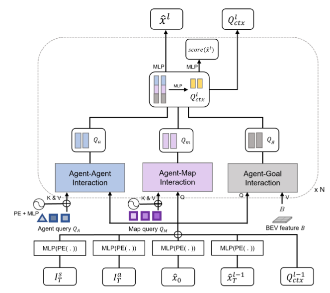
図4：MotionFormer。\(N\) 個積み重ねたエージェント–エージェント、エージェント–地図、エージェント–ゴール相互作用の Transformer で構成される。エージェント–エージェントおよびエージェント–地図の相互作用モジュールは標準的な Transformer デコーダ層で構築される。エージェント–ゴール相互作用モジュールは変形可能交差注意モジュール［109］の上に構築される。\(I_T^s\)：シーンレベルのアンカーの終点、\(I_T^a\)：クラスタリングされたエージェントレベルのアンカーの終点、\(\hat{x}_0\)：エージェントの現在位置、\(\hat{x}_T^{l-1}\)：前の層から予測されたゴール点、\(Q_{\text{ctx}}^{l-1}\)：前の層からのクエリコンテキスト。
図中ラベル：Agent-Agent Interaction＝エージェント–エージェント相互作用、Agent-Map Interaction＝エージェント–地図相互作用、Agent-Goal Interaction＝エージェント–ゴール相互作用、Agent query＝エージェントクエリ、Map query＝マップクエリ、BEV feature＝BEV 特徴、PE + MLP＝位置符号化＋MLP、K & V＝キーとバリュー
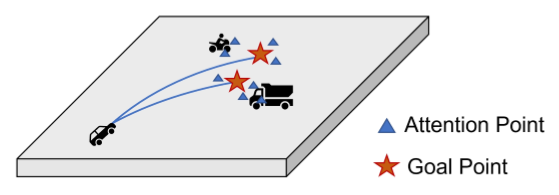
図5：エージェント–ゴール相互作用モジュールの説明図。BEV の視覚特徴は、変形可能交差注意によって各エージェントのゴール点の近傍でサンプリングされる。
図中ラベル：Attention Point＝注意点、Goal Point＝ゴール点
詳細をよりよく説明するため、図4 に示す図を提供する。我々の MotionFormer は、クエリ位置を埋め込むために \(I_T^a\)、\(I_T^s\)、\(\hat{x}_0\)、\(\hat{x}_T^{l-1} \in \mathbb{R}^{\mathcal{K}\times 2}\) を受け取り、クエリコンテキストとして \(Q_{ctx}^{l-1}\) を受け取る。具体的には、アンカーはすべてのエージェントの学習データに対して k-means アルゴリズムでクラスタリングされ、出力モダリティと整合するよう \(\mathcal{K} = 6\) とする。シーンレベルの事前情報を埋め込むため、アンカー \(I_T^a\) は各エージェントの現在位置と方位角に従ってグローバル座標系へ回転・並進され、これを式 (12) に示すように \(I_T^s\) と表す。
\[ I_{i,T}^s = R_i I_T^a + T_i, \tag{12} \]
ここで \(i\) はエージェントのインデックスであり、以後は簡潔さのため省略する。粗から細へのパラダイムを促進するため、前の層から予測されたゴール点 \(\hat{x}_T^{l-1}\) も採用する。同時に、エージェントの現在位置をモダリティ方向にブロードキャストし、これを \(\hat{x}_0\) と表す。次に、各事前位置知識に MLP と正弦波位置埋め込みを適用し、それらをクエリ位置 \(Q_{\text{pos}} \in \mathbb{R}^{\mathcal{K}\times\mathcal{D}}\) としてまとめる。これはクエリコンテキスト \(Q_{ctx}\) と同じ形状である。\(Q_{\text{pos}}\) と \(Q_{\text{ctx}}\) がともにモーションクエリを構成する。MotionFormer 全体を通じて \(\mathcal{D}\) を 256 とする。
図4 に示すように、MotionFormer は 3 つの主要な Transformer ブロック、すなわちエージェント–エージェント、エージェント–地図、エージェント–ゴール相互作用モジュールで構成される。エージェント–エージェントおよびエージェント–地図相互作用モジュールは標準的な Transformer デコーダ層で構築され、これはマルチヘッド自己注意（MHSA）層、マルチヘッド交差注意（MHCA）層、フィードフォワードネットワーク（FFN）、およびその間のいくつかの残差・正規化層で構成される［8］。エージェントクエリ \(Q_A\) とマップクエリ \(Q_M\) に加えて、正弦波位置埋め込みとそれに続く MLP 層による位置埋め込みもそれらのクエリに加える。エージェント–ゴール相互作用モジュールは変形可能交差注意モジュール［109］の上に構築されており、図5 に示すように、前に予測された軌道のゴール点（\(R_i\hat{x}_{i,T}^{l-1} + T_i\)）が参照点として採用される。具体的には、サンプリング点の数を軌道あたり 4 とし、前述のとおりエージェントあたり 6 本の軌道とする。各相互作用モジュールの出力特徴は連結され、MLP 層によって次元 \(\mathcal{D} = 256\) に射影される。その後、ガウス混合モデルを用いて各エージェントの軌道を構築する。ここで \(\hat{x}_l \in \mathcal{R}^{\mathcal{K}\times T\times 5}\) である。UniAD では予測時間ホライズン \(T\) を 12（6 秒）とする。最終的な出力軌道としては、最後の次元のうち最初の 2 つ（すなわち \(x\) と \(y\)）のみを用いることに注意されたい。さらに、各モダリティのスコアも予測する（\(score(\hat{x}_l) \in \mathcal{R}^{\mathcal{K}}\)）。モジュール全体を \(N\) 回積み重ね、実際には \(N\) を 3 とする。
上流モジュールからの BEV 特徴が与えられると、効率的な複数ステップ予測のために、まず畳み込み層によってそれを 1/4 にダウンサンプルし、その後、提案する OccFormer に渡す。OccFormer は図6 に示す \(T_o\) 個の逐次的なブロックで構成され、\(T_o = 5\) は時間ホライズン（現在および将来のフレームを含む）であり、各ブロックは特定の 1 フレームの占有の生成を担う。
エージェントレベルの知識が不足している従来の研究とは異なり、我々の提案手法は、将来の表現を展開する際に密なシーン特徴と疎なエージェント特徴の両方を組み込む。密なシーン特徴は直前のブロックの出力（現在フレームの場合は観測特徴）であり、ピクセル–エージェント相互作用の計算量を削減するために、畳み込み層によってさらに縮小（1/8）される。疎なエージェント特徴は、トラッククエリ \(Q_A\)、エージェント位置 \(P_A\)、モーションクエリ \(Q_X\) の連結から導出され、その後、時間的な感度のために時刻固有の MLP に渡される。急速に変化する一部のシーンで必要となる長期的な依存関係をモデル化するためにピクセルレベルの自己注意を行い、その後、シーンの各ピクセルを対応するエージェントに注意させることでシーン–エージェントの統合を行う。エージェントとピクセルの位置の整合を強化するため、マスク特徴と縮小されたシーン特徴との行列積によって生成される注意マスクで交差注意を制限する。ここでマスク特徴は、エージェント特徴を MLP で符号化することで生成される。次に、注意を経た密な特徴を入力 \(F^{t-1}\) と同じ解像度（1/4）にアップサンプルし、安定性のための残差接続として \(F^{t-1}\) と加算する。得られた特徴 \(F^t\) は、次のブロックと、元の BEV 解像度（1/1）で占有を予測するための畳み込みデコーダの両方に送られる。マスク特徴を再利用して別の MLP に渡して占有特徴を形成し、インスタンスレベルの占有は、占有特徴と復号された密な特徴 \(F_{\text{dec}}^t\)（1/1）との行列積によって生成される。マスク特徴のための MLP 層、占有特徴のための MLP 層、および畳み込みデコーダはすべての \(T_o\) 個のブロックで共有され、その他の構成要素は各ブロックで独立していることに注意されたい。OccFormer におけるすべての密な特徴とエージェント特徴の次元は 256 である。
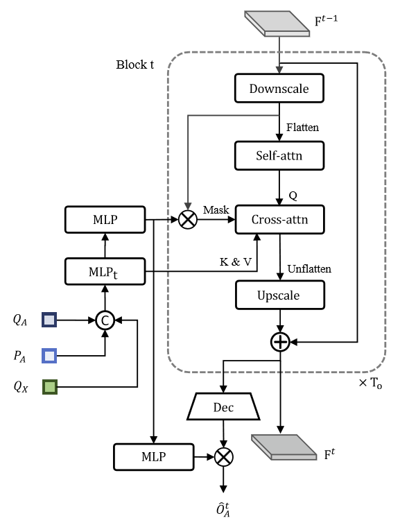
図6：OccFormer。\(T_o\) 個の逐次的なブロックで構成され、\(T_o\) は時間ホライズン（現在および将来のフレームを含む）であり、各ブロックは特定の 1 フレームの占有の生成を担う。上流のトラッククエリ \(Q_A\)、エージェント位置 \(P_A\)、モーションクエリ \(Q_X\) から符号化された密なシーン特徴と疎なエージェント特徴の両方を組み込み、エージェントレベルの知識を将来のシーン表現に注入する。各ブロックの最後で、エージェントレベル特徴と復号された密な特徴との行列積によってインスタンスレベルの占有 \(\hat{O}_A^t\) を形成する。
図中ラベル：Block t＝ブロック t、Downscale＝縮小、Flatten＝平坦化、Self-attn＝自己注意、Cross-attn＝交差注意、Mask＝マスク、K & V＝キーとバリュー、Unflatten＝平坦化の解除、Upscale＝拡大、Dec＝デコーダ
図7 に示すように、我々のプランナは、追跡モジュールと動き予測モジュールから生成された自車両クエリを受け取る。これらはそれぞれ青い三角形と黄色い長方形で表されている。これら 2 つのクエリはコマンド埋め込みとともに MLP 層で符号化され、その後モダリティ次元にわたる max-pooling 層によって、最も顕著なモーダル特徴が選択・集約される。BEV 特徴相互作用モジュールは標準的な Transformer デコーダ層で構築され、\(N\) 層積み重ねられる。ここでは \(N = 3\) とする。具体的には、集約された計画クエリで密な BEV 特徴に交差注意を行う。このモジュールの有効性を示すさらなる定性的結果は付録 F.5 にある。位置情報を埋め込むため、計画クエリを学習された位置埋め込みと融合し、BEV 特徴を正弦波位置埋め込みと融合する。その後、MLP 層で計画軌道を回帰し、これを \(\hat{\tau} \in \mathcal{R}^{T_p\times 2}\) と表す。ここでは \(T_p = 6\)（3 秒）とする。最後に、障害物回避のための衝突オプティマイザを考案する。これは本論文の式 (10) のように、予測された占有 \(\hat{O}\) と軌道 \(\hat{\tau}\) を入力として受け取る。\(d = 5\)、\(\sigma = 1.0\)、\(\lambda_{\text{coord}} = 1.0\)、\(\lambda_{\text{obs}} = 5.0\) とする。
共同学習。UniAD は、より安定であることがわかった 2 段階で学習される。第 1 段階では、知覚予測を安定させるため、追跡とオンライン地図作成を含む知覚タスクを事前学習する。具体的には、高速な収束のために、対応する事前学習済みの BEVFormer［55］の重みを UniAD に読み込む。これには画像バックボーン、FPN、BEV エンコーダ、検出デコーダが含まれるが、物体クエリの埋め込みは除く（追加の自車両クエリがあるため）。メモリコストを削減するために画像バックボーンでの勾配の逆伝播を止め、追跡とオンライン地図作成の損失を用いて UniAD を次のように 6 エポック学習する：
\[ L_1 = L_{\text{track}} + L_{\text{map}}. \tag{13} \]
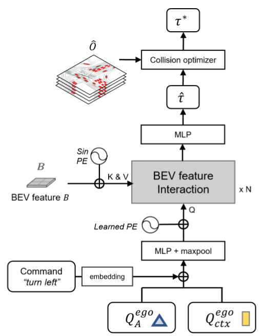
図7：Planner。\(Q_A^{\text{ego}}\) と \(Q_{\text{ctx}}^{\text{ego}}\) は、それぞれ追跡モジュールと動き予測モジュールからの自車両クエリである。高レベルのコマンドとともに、これらは MLP 層とそれに続くモダリティ次元にわたる max-pooling 層で符号化され、最も顕著なモーダル特徴が選択・集約される。BEV 特徴相互作用モジュールは標準的な Transformer デコーダ層で構築され、\(N\) 層積み重ねられる。
図中ラベル：Collision optimizer＝衝突オプティマイザ、BEV feature Interaction＝BEV 特徴相互作用、BEV feature＝BEV 特徴、Sin PE＝正弦波位置符号化、Learned PE＝学習された位置符号化、MLP + maxpool＝MLP＋max-pooling、Command "turn left"＝コマンド「左折」、embedding＝埋め込み、K & V＝キーとバリュー
第 2 段階では、画像バックボーンを同様に凍結したまま、さらに画像ビューから BEV へのビュー変換に用いる BEV エンコーダも凍結し、より多くの下流モジュールによるメモリ消費をさらに削減する。ここで UniAD は、追跡、地図作成、動き予測、占有予測、計画を含むすべてのタスクの損失を用いて 20 エポック学習される（本論文の様々なアブレーション研究では、効率のため 8 エポック学習している）：
\[ L_2 = L_{\text{track}} + L_{\text{map}} + L_{\text{motion}} + L_{\text{occ}} + L_{\text{plan}}. \tag{14} \]
\(L_1\) と \(L_2\) の各項における詳細な損失とハイパーパラメータについては、以下で個別に説明する。両段階において、追跡と BEV 特徴の集約［55］のための各学習系列（各ステップ）の長さは 5（アブレーション研究では効率のため 3）である。
検出と追跡の損失。BEVFormer［55］に従い、対応付けられた各結果にハンガリアン損失を採用する。これはクラスラベルのための Focal 損失［61］と 3D ボックスの位置推定のための \(l_1\) 損失の線形結合である。マッチング戦略に関しては、新規クエリからの候補は二部マッチングによって正解物体と対応付けられ、トラッククエリからの予測は以前のフレームで割り当てられた正解のインデックスを引き継ぐ。具体的には、\(L_{\text{track}} = \lambda_{\text{focal}} L_{\text{focal}} + \lambda_{l_1} L_{l_1}\) であり、\(\lambda_{\text{focal}} = 2\)、\(\lambda_{l_1} = 0.25\) である。
オンライン地図作成の損失。［56］と同様に、これは車線、区画線、輪郭に対する thing 損失と、走行可能領域に対する stuff 損失を含む。ここで Focal 損失は分類を、L1 損失は thing のバウンディングボックスを、Dice 損失と GIoU 損失［80］はセグメンテーションを担当する。詳しくは、\(L_{\text{map}} = \lambda_{\text{focal}} L_{\text{focal}} + \lambda_{l_1} L_{l_1} + \lambda_{\text{giou}} L_{\text{giou}} + \lambda_{\text{dice}} L_{\text{dice}}\) であり、\(\lambda_{\text{focal}} = \lambda_{\text{giou}} = \lambda_{\text{dice}} = 2\)、\(\lambda_{l_1} = 0.25\) である。
動き予測の損失。従来の手法の多くと同様に、マルチモーダルな軌道をガウス混合としてモデル化し、マルチパス損失［12,90］を用いる。これは分類スコア損失 \(L_{\text{cls}}\) と負の対数尤度損失項 \(L_{\text{nll}}\) を含み、\(\lambda\) は対応する重みを表す：\(L_{\text{motion}} = \lambda_{\text{cls}} L_{\text{cls}} + \lambda_{\text{reg}} L_{\text{nll}}\)、ここで \(\lambda_{\text{cls}} = \lambda_{\text{reg}} = 0.5\) である。軌道の時間的な滑らかさを確保するため、まず各タイムステップにおけるエージェントの速度を予測し、それを時間方向に累積して最終的な軌道を得る［41］。
占有予測の損失。インスタンスレベルの占有予測の出力は各エージェントの二値セグメンテーションであるため、占有損失として二値交差エントロピーと Dice 損失［67］を採用する。形式的には \(L_{\text{occ}} = \lambda_{\text{bce}} L_{\text{bce}} + \lambda_{\text{dice}} L_{\text{dice}}\) であり、ここでは \(\lambda_{\text{bce}} = 5\)、\(\lambda_{\text{dice}} = 1\) とする。さらに、ピクセル–エージェント相互作用モジュールにおける注意マスクは粗い予測とみなせるため、同じ形式の補助的な占有損失を用いてこれを教師付けする。
計画の損失。安全性は計画において最も重要な要素である。したがって、素朴な模倣の \(l_2\) 損失に加えて、計画軌道を障害物から遠ざける別の衝突損失を次のように用いる：
\[ L_{\text{col}}(\hat{\tau}, \delta) = \sum_{i,t} \texttt{IoU}(box(\hat{\tau}_t, w + \delta, l + \delta), b_{i,t}), \tag{15} \]
\[ L_{\text{plan}} = \lambda_{\text{imi}} |\hat{\tau}, \tilde{\tau}|_2 + \lambda_{\text{col}} \sum_{(\omega,\delta)} \omega L_{\text{col}}(\hat{\tau}, \delta), \tag{16} \]
ここで \(\lambda_{\text{imi}} = 1\)、\(\lambda_{\text{col}} = 2.5\) であり、\((\omega, \delta)\) は追加の安全距離を考慮した重みと値の組である。\(box(\hat{\tau}_t, w + \delta, l + \delta)\) は、より大きな安全距離を保つためにタイムスタンプ \(t\) においてサイズを拡大した自車両のバウンディングボックスを表し、\(b_{i,t}\) はシーン内で予測された各エージェントを示す。実際には、\((\omega, \delta)\) を \((1.0, 0.0), (0.4, 0.5), (0.1, 1.0)\) とする。
両段階とも基本的な学習設定の大部分は BEVFormer［55］に従い、バッチサイズ 1、学習率 \(2\times 10^{-4}\)、バックボーンの学習率乗数 0.1、重み減衰 \(1\times 10^{-2}\) の AdamW オプティマイザ［65］を用いる。BEV のデフォルトのサイズは \(200\times 200\) であり、X 軸と Y 軸の両方で [-51.2m, 51.2m] の BEV 範囲を 0.512m 間隔で覆う。特徴次元に関するその他のハイパーパラメータは表11 に示す。実験は 16 基の NVIDIA Tesla A100 GPU で行う。
複数物体追跡。標準的な評価プロトコルに従い、nuScenes データセットにおける UniAD の 3D 追跡性能の評価に、AMOTA（Average Multi-object Tracking Accuracy、平均複数物体追跡正確度）、AMOTP（Average Multi-object Tracking Precision、平均複数物体追跡精度）、Recall（再現率）、IDS（Identity Switches、ID スイッチ）を用いる。AMOTA と AMOTP は、MOTA（Multi-object Tracking Accuracy）と MOTP（Multi-object Tracking Precision）の値をすべての再現率にわたって積分することで計算される：
\[ \text{AMOTA} = \frac{1}{n-1} \sum_{r\in\{\frac{1}{n-1}, \frac{2}{n-1}, \ldots, 1\}} \text{MOTA}_r, \tag{17} \]
\[ \text{MOTA}_r = \max\left(0, 1 - \frac{\text{FP}_r + \text{FN}_r + \text{IDS}_r - (1-r)\text{GT}}{r\text{GT}}\right), \tag{18} \]
ここで \(\text{FP}_r\)、\(\text{FN}_r\)、\(\text{IDS}_r\) は、それぞれ対応する再現率 \(r\) において計算された偽陽性、偽陰性、ID スイッチの数を表す。GT はこのフレームにおける正解物体の数を表す。AMOTP は次のように定義できる：
\[ \text{AMOTP} = \frac{1}{n-1} \sum_{r\in\{\frac{1}{n-1}, \frac{2}{n-1}, \ldots, 1\}} \frac{\sum_{i,t} d_{i,t}}{\text{TP}_r}, \tag{19} \]
ここで \(d_{i,t}\) はタイムスタンプ \(t\) におけるマッチングされたトラック \(i\) の位置誤差（\(x\) 軸と \(y\) 軸）を表し、\(\text{TP}_r\) は対応する再現率 \(r\) における真陽性の数である。
オンライン地図作成。オンライン地図作成タスクには 4 つのカテゴリ、すなわち車線、境界、横断歩道、走行可能領域がある。ネットワーク出力と正解地図との間で、各クラスについて IoU（intersection-over-union）指標を計算する。
動き予測。一方では、標準的な動き予測のプロトコルに従い、minADE（minimum Average Displacement Error、最小平均変位誤差）、minFDE（minimum Final Displacement Error、最小最終変位誤差）、MR（Miss Rate、ミス率）を含む従来の評価指標を採用する。先行研究［57,66,75］と同様に、これらの指標はマッチングされた TP の中でのみ計算され、すべての実験でマッチングの閾値を 1.0m とする。MR については、ミスとみなす FDE の閾値を 2.0m とする。他方では、最近提案されたエンドツーエンドの評価指標、すなわち EPA（End-to-end Prediction Accuracy、エンドツーエンド予測精度）［30］と minFDE-AP［75］も用いる。EPA については、公平な比較のため ViP3D［30］と同じ設定を用いる。minFDE-AP については、簡単のため正解を複数のビン（静止、直線移動、非直線移動のサブカテゴリ）に分けない。具体的には、物体の知覚位置とその min-FDE が距離の閾値（それぞれ 1.0m と 2.0m）以内にある場合にのみ、AP（平均適合率）の計算において TP として数える。先行研究と同様に、乗用車、トラック、建設車両、バス、トレーラー、オートバイ、自転車を車両カテゴリとして統合し、実験で示すすべての動き予測指標は車両カテゴリで評価する。
（訳注：本文の表8 では「minFDE-mAP」という名称が用いられているが、ここでは「minFDE-AP」と表記されている。同一の指標を指すと考えられる。）
占有予測。［35,105］に従い、シーン全体のレベルとインスタンスレベルの両方で予測された占有の品質を評価する。具体的には、IoU はインスタンス非依存なシーン全体のカテゴリ別セグメンテーションを測定し、Video Panoptic Quality（VPQ）［48］は各インスタンスの存在と時間的な一貫性を考慮する。VPQ 指標は次のように計算される：
\[ \text{VPQ} = \sum_{t=0}^{H} \frac{\sum_{(p_t,q_t)\in\text{TP}_t} \texttt{IoU}(p_t, q_t)}{|\text{TP}_t| + \frac{1}{2}|\text{FP}_t| + \frac{1}{2}|\text{FN}_t|}, \tag{20} \]
ここで \(H\) は将来のホライズンであり、［35,105］と同様に \(H = 4\)（現在のタイムスタンプを含めて \(T_o = 5\) となる）とし、2Hz で 2.0s の連続データをカバーする。\(\text{TP}_t\)、\(\text{FP}_t\)、\(\text{FN}_t\) は、それぞれタイムスタンプ \(t\) における真陽性、偽陽性、偽陰性の集合である。両指標とも 2 つの異なる BEV 範囲、すなわち自車両周辺の \(30m\times 30m\) の近距離（「-n.」）と \(100m\times 100m\) の遠距離（「-f.」）で評価する。両指標とも、現在のステップ（\(t = 0\)）と将来の 4 ステップの結果をまとめて評価する。
（訳注：本文の表6 のキャプションでは遠距離の評価範囲を \(50\times 50m\) としているが、ここでは \(100m\times 100m\) となっており、両者は一致しない。FIERY［35］の評価設定に従うなら \(100m\times 100m\) が正しいと考えられる。）
計画。ST-P3［38］と同じ評価指標、すなわち様々なタイムスタンプにおける L2 誤差と衝突率を採用する。
表13 に示すように、Nvidia Tesla A100 GPU 1 基で UniAD の複雑さと実行時間を測定する。タスクのデコーダ部分は一定量のパラメータをもたらすが、元の BEVFormer 検出器（ID 1）と比較すると、計算量は主にエンコーダ部分に由来する。また最近の BEVerse［105］との比較も示す。UniAD はより多くのタスクを持ち、優れた性能を達成し、かつ FLOPs がより少ない。これは追加の計算コストが許容できる範囲であることを示している。
表12 に示すように、異なるモデル規模のもとで UniAD の 3 つのバリエーションを示す。画像ビュー特徴抽出のために選択した画像バックボーンは、UniAD-S、UniAD-B、UniAD-L についてそれぞれ ResNet-50［32］、ResNet-101、VoVNet 2-99［51］である。モデル規模（画像エンコーダ）は主に BEV 特徴の品質に影響するため、より大きなバックボーンを用いると知覚のスコアが向上し、それがさらに予測と計画の性能の向上につながりうることが観察できる。
| 手法 | エンコーダ | 追跡 | 地図作成 | 動き予測 | 占有予測 | 計画 | ||||||||||
|---|---|---|---|---|---|---|---|---|---|---|---|---|---|---|---|---|
| AMOTA↑ | AMOTP↓ | IDS↓ | IoU-lane↑ | IoU-road↑ | minADE↓ | minFDE↓ | MR↓ | EPA↑ | IoU-n.↑ | IoU-f.↑ | VPQ-n.↑ | VPQ-f.↑ | avg.L2↓ | avg.Col.↓ | ||
| UniAD-S | R50 | 0.241 | 1.488 | 958 | 0.315 | 0.689 | 0.788 | 1.126 | 0.156 | 0.381 | 59.4 | 35.6 | 49.2 | 28.9 | 1.04 | 0.32 |
| UniAD-B | R101 | 0.359 | 1.320 | 906 | 0.313 | 0.691 | 0.708 | 1.025 | 0.151 | 0.456 | 63.4 | 40.2 | 54.7 | 33.5 | 1.03 | 0.31 |
| UniAD-L | V2-99* | 0.409 | 1.259 | 1583 | 0.323 | 0.709 | 0.723 | 1.067 | 0.158 | 0.508 | 64.1 | 42.6 | 55.8 | 36.9 | 1.03 | 0.29 |
表12：UniAD の 3 つのバリエーションの比較。∗：追加の深度データ［73］で事前学習。
| ID | Det. | Track | Map | Motion | Occ. | Plan | #Params | FLOPs | FPS |
|---|---|---|---|---|---|---|---|---|---|
| 0［105］ | ✓ | ✓ | ✓ | 102.5M | 1921G | - | |||
| 1 | ✓ | 65.9M | 1324G | 4.2 | |||||
| 2 | ✓ | ✓ | 68.2M | 1326G | 2.7 | ||||
| 3 | ✓ | ✓ | ✓ | 95.8M | 1520G | 2.2 | |||
| 4 | ✓ | ✓ | ✓ | ✓ | 108.6M | 1535G | 2.1 | ||
| 5 | ✓ | ✓ | ✓ | ✓ | ✓ | 122.5M | 1701G | 2.0 | |
| 6 | ✓ | ✓ | ✓ | ✓ | ✓ | ✓ | 125.0M | 1709G | 1.8 |
表13：異なるモジュールを組み込んだ場合の計算量と実行時間。ID.1 は元の BEVFormer［55］に類似しており、ID.0（BEVerse-Tiny）［105］は MTL フレームワークである。
列名：Det.＝検出、Track＝追跡、Map＝地図作成、Motion＝動き予測、Occ.＝占有予測、Plan＝計画、#Params＝パラメータ数
注意マスクの可視化。内部メカニズムを調べてその説明可能性を示すため、プランナにおける交差注意モジュールの注意マスクを可視化する。図8 に示すように、予測された追跡のバウンディングボックス、計画軌道、正解の HD 地図を参考のために描画し、その上に注意マスクを重ねている。左から右へ、時系列上で連続しているがナビゲーションコマンドが異なる 2 つのフレームを示す。計画軌道がコマンドに応じて大きく変化することが観察できる。また、目標とする車線や、自車両に道を譲っている重要なエージェントに多くの注意が払われている。
様々なシナリオの可視化。都市部の巡航（図9）、危険な事例（図10）、障害物回避のシナリオ（図11）を含む、より多くのシナリオの可視化を示す。我々の計画指向の設計を支持する有望な証拠の 1 つを図12 に示す。ここでは前段のモジュールで不正確な結果が生じているが、後段のタスクは依然として回復できている。同様に、サラウンドビュー画像、BEV、およびプランナからの注意マスクにおいて、すべてのタスクの結果を示す。参考としてデモ動画3も提供している。
失敗事例は、自動運転アルゴリズムがその弱点を理解し、今後の研究を導くうえで不可欠であり、ここでは UniAD のいくつかの失敗事例を示す。UniAD の失敗事例は、図13 と図14 に示すように、主にすべてのモジュールが影響を受けるロングテールのシナリオで生じる。
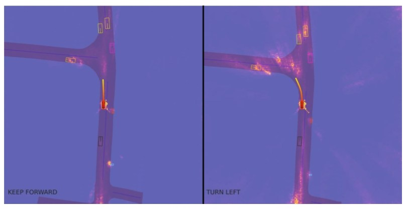
図8：ナビゲーションコマンドの有効性と注意マスクの可視化。ここでは、ナビゲーションコマンドに応じてどのように注意が払われるかを示す。計画モジュール内の BEV 相互作用モジュールからの注意マスク、予測された追跡のバウンディングボックス、および計画軌道を描画している。ナビゲーションコマンドは左下に表示されており、HD 地図は参考のためにのみ描画している。左から右へ、時系列上で連続しているがナビゲーションコマンドが異なる 2 つのフレームを示す。計画軌道がコマンドに応じて大きく変化することが観察できる。また、目標とする車線や、自車両に道を譲っている重要なエージェントに多くの注意が払われている。
図中ラベル：KEEP FORWARD＝直進、TURN LEFT＝左折
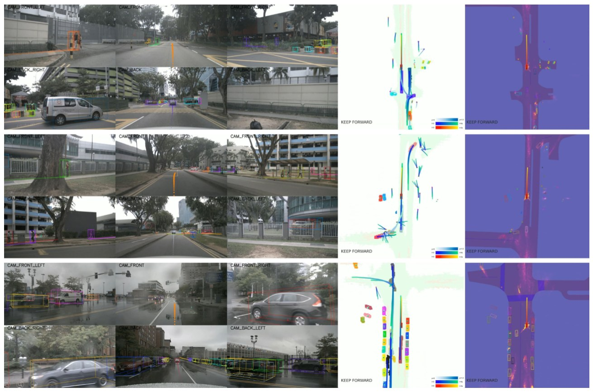
図9：都市部の巡航の可視化。UniAD は高品質で解釈可能な知覚・予測結果を生成し、安全な操縦を行うことができる。最初の 3 列は 6 つのカメラビューを示し、最後の 2 列はそれぞれ予測結果と計画モジュールからの注意マスクである。各エージェントは固有の色で示されている。動き予測からは、画像ビューでは上位 1 本、BEV では上位 3 本の軌道のみを可視化のために選択している。
図中ラベル：CAM_FRONT_LEFT／CAM_FRONT／CAM_FRONT_RIGHT／CAM_BACK_RIGHT／CAM_BACK／CAM_BACK_LEFT＝各カメラ（前方左／前方／前方右／後方右／後方／後方左）、KEEP FORWARD＝直進
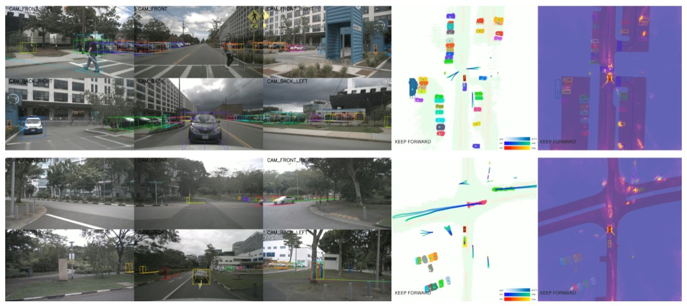
図10：危険な事例の可視化。ここでは 2 つの危険な事例を示す。1 つ目のシナリオ（上）は自車両が道路を横断する 2 人の歩行者に道を譲っている様子を示し、2 つ目のシナリオ（下）は自車両が高速で移動する車に道を譲り、交差点付近で保護（信号による優先）なしに直進するのを待っている様子を示している。最も重要なエージェント、すなわち歩行者と高速で移動する車両、および意図されたゴール位置に多くの注意が払われていることが観察できる。
図中ラベル：CAM_*＝各カメラ画像、KEEP FORWARD＝直進
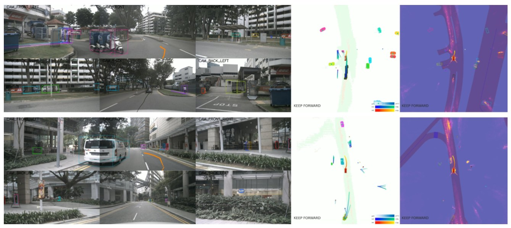
図11：障害物回避の可視化。これら 2 つのシナリオでは、自車両は障害物となる車両を避けるために注意深く車線変更を行っている。注意マスクから、我々の手法が障害物と前後の道路に注目していることが観察できる。
図中ラベル：CAM_*＝各カメラ画像、KEEP FORWARD＝直進
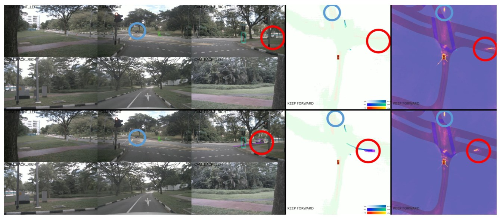
図12：知覚の失敗から回復する計画の可視化。前段のモジュールで不正確な結果が生じても、後段のタスクが依然として回復できる興味深い事例を示す。上段と下段は同じシナリオの連続する 2 フレームを表す。赤い円内の車両は、遠方から交差点に向かって高速で移動している。追跡モジュールは最初はこれを見逃し、後のフレームでこれを捉えていることが観察される。青い円は交通に道を譲っている停止車両を示しており、これは両方のフレームで見逃されている。興味深いことに、両方の車両は前段のモジュールで見逃されているにもかかわらず、プランナの注意マスクに強い反応を示している。これは、我々のプランナが見逃された重要なエージェントにも依然として注意を払っていることを意味し、これは従来の断片化された統合されていない運転システムでは扱いが困難なことであり、UniAD の頑健性を示している。
図中ラベル：CAM_*＝各カメラ画像、KEEP FORWARD＝直進
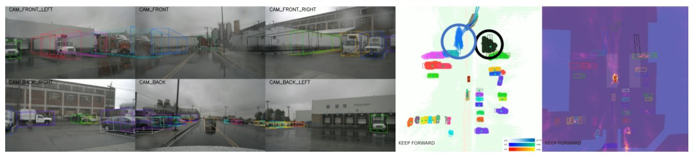
図13：失敗事例 1。ここでは、白いコンテナを載せた大型トレーラーが道路全体を占有しているロングテールのシナリオを示す。我々の追跡モジュールが、前方のトレーラーの正確なサイズと、道路脇の車両の方位角を検出できていないことが観察できる。
図中ラベル：CAM_*＝各カメラ画像、KEEP FORWARD＝直進
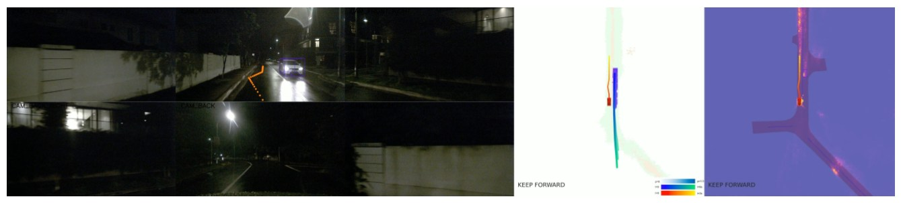
図14：失敗事例 2。この事例では、プランナは狭い道路で対向してくる車両に対して過度に慎重になっている。暗い環境は自動運転におけるロングテールのシナリオの重要な類型の 1 つである。衝突損失の重みを小さくし、境界に関する制約を増やすことで、この問題を緩和できる可能性がある。
図中ラベル：KEEP FORWARD＝直進